<!DOCTYPE html>
<head>    
    <meta http-equiv="content-type" content="text/html; charset=UTF-8" />
    
        <script>
            L_NO_TOUCH = false;
            L_DISABLE_3D = false;
        </script>
    
    <style>html, body {width: 100%;height: 100%;margin: 0;padding: 0;}</style>
    <style>#map {position:absolute;top:0;bottom:0;right:0;left:0;}</style>
    <script src="https://cdn.jsdelivr.net/npm/leaflet@1.6.0/dist/leaflet.js"></script>
    <script src="https://code.jquery.com/jquery-1.12.4.min.js"></script>
    <script src="https://maxcdn.bootstrapcdn.com/bootstrap/3.2.0/js/bootstrap.min.js"></script>
    <script src="https://cdnjs.cloudflare.com/ajax/libs/Leaflet.awesome-markers/2.0.2/leaflet.awesome-markers.js"></script>
    <link rel="stylesheet" href="https://cdn.jsdelivr.net/npm/leaflet@1.6.0/dist/leaflet.css"/>
    <link rel="stylesheet" href="https://maxcdn.bootstrapcdn.com/bootstrap/3.2.0/css/bootstrap.min.css"/>
    <link rel="stylesheet" href="https://maxcdn.bootstrapcdn.com/bootstrap/3.2.0/css/bootstrap-theme.min.css"/>
    <link rel="stylesheet" href="https://maxcdn.bootstrapcdn.com/font-awesome/4.6.3/css/font-awesome.min.css"/>
    <link rel="stylesheet" href="https://cdnjs.cloudflare.com/ajax/libs/Leaflet.awesome-markers/2.0.2/leaflet.awesome-markers.css"/>
    <link rel="stylesheet" href="https://cdn.jsdelivr.net/gh/python-visualization/folium/folium/templates/leaflet.awesome.rotate.min.css"/>
    
            <meta name="viewport" content="width=device-width,
                initial-scale=1.0, maximum-scale=1.0, user-scalable=no" />
            <style>
                #map_1257dd7fade54a548447e1b689e28b55 {
                    position: relative;
                    width: 100.0%;
                    height: 100.0%;
                    left: 0.0%;
                    top: 0.0%;
                }
            </style>
        
    <script src="https://cdnjs.cloudflare.com/ajax/libs/leaflet-locatecontrol/0.66.2/L.Control.Locate.min.js"></script>
    <link rel="stylesheet" href="https://cdnjs.cloudflare.com/ajax/libs/leaflet-locatecontrol/0.66.2/L.Control.Locate.min.css"/>
    <link rel="stylesheet" href="styles.css"/>
</head>
<body>    
    
            <div class="folium-map" id="map_1257dd7fade54a548447e1b689e28b55" ></div>
        
</body>
<script>    
    
            var map_1257dd7fade54a548447e1b689e28b55 = L.map(
                "map_1257dd7fade54a548447e1b689e28b55",
                {
                    center: [60.12234632531181, 19.908630268648267],
                    crs: L.CRS.EPSG3857,
                    zoom: 10,
                    zoomControl: true,
                    preferCanvas: false,
                }
            );

            

        
    
            var tile_layer_39c6f4e0151e421a9c98d5c3b79d2b78 = L.tileLayer(
                "https://{s}.tile.openstreetmap.org/{z}/{x}/{y}.png",
                {"attribution": "Data by \u0026copy; \u003ca href=\"http://openstreetmap.org\"\u003eOpenStreetMap\u003c/a\u003e, under \u003ca href=\"http://www.openstreetmap.org/copyright\"\u003eODbL\u003c/a\u003e.", "detectRetina": false, "maxNativeZoom": 18, "maxZoom": 18, "minZoom": 0, "noWrap": false, "opacity": 1, "subdomains": "abc", "tms": false}
            ).addTo(map_1257dd7fade54a548447e1b689e28b55);
        
    
            var marker_c9fd937e024c4e848a0b26233a540a3f = L.marker(
                [60.05250053945929, 20.315122408792377],
                {}
            ).addTo(map_1257dd7fade54a548447e1b689e28b55);
        
    
            var icon_b02222ebf9d7493b87fbb89e1bd228d0 = L.AwesomeMarkers.icon(
                {"extraClasses": "fa-rotate-0", "icon": "glyphicon-stop", "iconColor": "white", "markerColor": "lightgray", "prefix": "glyphicon"}
            );
            marker_c9fd937e024c4e848a0b26233a540a3f.setIcon(icon_b02222ebf9d7493b87fbb89e1bd228d0);
        
    
        var popup_6e76a38137284b898b045c2a1011ce5a = L.popup({"maxWidth": "100%"});

        
            var html_5de63221e96245e681c8b7fb97f28ff9 = $(`<div id="html_5de63221e96245e681c8b7fb97f28ff9" style="width: 100.0%; height: 100.0%;"><h3>JENG-2020-36</h3> <h4>Planar Structures</h4> <table> <thead> <tr> <th align="right">DIP</th> <th align="right">DIRECTION_OF_DIP</th> <th align="left">STYPE_TEXT</th> <th align="left">FOL_TYPE_TEXT</th> </tr> </thead> <tbody> <tr> <td align="right">75</td> <td align="right">356</td> <td align="left">Fault</td> <td align="left"></td> </tr> </tbody> </table> <h4></h4> <h4></h4> <h4>Observation remarks</h4> <p>Major fault with no clear movement. Still it is big enough so that clearly can be recognised.</p> <h4>Images</h4></div>`)[0];
            popup_6e76a38137284b898b045c2a1011ce5a.setContent(html_5de63221e96245e681c8b7fb97f28ff9);
        

        marker_c9fd937e024c4e848a0b26233a540a3f.bindPopup(popup_6e76a38137284b898b045c2a1011ce5a)
        ;

        
    
    
            marker_c9fd937e024c4e848a0b26233a540a3f.bindTooltip(
                `<div>
                     JENG-2020-36
                 </div>`,
                {"sticky": true}
            );
        
    
            var marker_6761c65a5d6c432fa22e47471afaf7e7 = L.marker(
                [60.05112687125802, 20.316994171589613],
                {}
            ).addTo(map_1257dd7fade54a548447e1b689e28b55);
        
    
            var icon_8b2b57c953984e9eb21e366570688092 = L.AwesomeMarkers.icon(
                {"extraClasses": "fa-rotate-0", "icon": "glyphicon-stop", "iconColor": "white", "markerColor": "lightgray", "prefix": "glyphicon"}
            );
            marker_6761c65a5d6c432fa22e47471afaf7e7.setIcon(icon_8b2b57c953984e9eb21e366570688092);
        
    
        var popup_c79a28719e0045e086d9af264a9f19a9 = L.popup({"maxWidth": "100%"});

        
            var html_1ed0dc1b40bf463fb386306f6cd384b1 = $(`<div id="html_1ed0dc1b40bf463fb386306f6cd384b1" style="width: 100.0%; height: 100.0%;"><h3>JENG-2020-37</h3> <h4>Planar Structures</h4> <table> <thead> <tr> <th align="right">DIP</th> <th align="right">DIRECTION_OF_DIP</th> <th align="left">STYPE_TEXT</th> <th align="left">FOL_TYPE_TEXT</th> </tr> </thead> <tbody> <tr> <td align="right">82</td> <td align="right">347</td> <td align="left">Fault</td> <td align="left"></td> </tr> <tr> <td align="right">74</td> <td align="right">17</td> <td align="left">Fault</td> <td align="left"></td> </tr> </tbody> </table> <h4></h4> <h4></h4> <h4>Observation remarks</h4> <p>A minor fault with dextral displacement. Secondary fracturing indicating dextral sense.</p> <h4>Images</h4></div>`)[0];
            popup_c79a28719e0045e086d9af264a9f19a9.setContent(html_1ed0dc1b40bf463fb386306f6cd384b1);
        

        marker_6761c65a5d6c432fa22e47471afaf7e7.bindPopup(popup_c79a28719e0045e086d9af264a9f19a9)
        ;

        
    
    
            marker_6761c65a5d6c432fa22e47471afaf7e7.bindTooltip(
                `<div>
                     JENG-2020-37
                 </div>`,
                {"sticky": true}
            );
        
    
            var marker_d975b14235904d50bf28451713369f53 = L.marker(
                [60.05083480384201, 20.31750898808241],
                {}
            ).addTo(map_1257dd7fade54a548447e1b689e28b55);
        
    
            var icon_08033c942e204fda84f043afa304875c = L.AwesomeMarkers.icon(
                {"extraClasses": "fa-rotate-0", "icon": "glyphicon-stop", "iconColor": "white", "markerColor": "lightgray", "prefix": "glyphicon"}
            );
            marker_d975b14235904d50bf28451713369f53.setIcon(icon_08033c942e204fda84f043afa304875c);
        
    
        var popup_3f18d54ef05341b2a82ea58b7f084367 = L.popup({"maxWidth": "100%"});

        
            var html_670c41dd71924bc4937f8ac0005f3975 = $(`<div id="html_670c41dd71924bc4937f8ac0005f3975" style="width: 100.0%; height: 100.0%;"><h3>JENG-2020-38</h3> <h4>Planar Structures</h4> <table> <thead> <tr> <th align="right">DIP</th> <th align="right">DIRECTION_OF_DIP</th> <th align="left">STYPE_TEXT</th> <th align="left">FOL_TYPE_TEXT</th> </tr> </thead> <tbody> <tr> <td align="right">82</td> <td align="right">350</td> <td align="left">Fault</td> <td align="left"></td> </tr> <tr> <td align="right">72</td> <td align="right">95</td> <td align="left">Fault</td> <td align="left"></td> </tr> </tbody> </table> <h4></h4> <h4></h4> <h4>Observation remarks</h4> <p>Major fault with dextral steps indicating dextral displacement. Appearance is different from other faults with steps and some quartz as fracture filling. Other measurement is a fault with more quartz filling.</p> <h4>Images</h4></div>`)[0];
            popup_3f18d54ef05341b2a82ea58b7f084367.setContent(html_670c41dd71924bc4937f8ac0005f3975);
        

        marker_d975b14235904d50bf28451713369f53.bindPopup(popup_3f18d54ef05341b2a82ea58b7f084367)
        ;

        
    
    
            marker_d975b14235904d50bf28451713369f53.bindTooltip(
                `<div>
                     JENG-2020-38
                 </div>`,
                {"sticky": true}
            );
        
    
            var marker_1be16241667d4647abcad1dcb84a0112 = L.marker(
                [60.05039383191615, 20.318730734288692],
                {}
            ).addTo(map_1257dd7fade54a548447e1b689e28b55);
        
    
            var icon_c851c01e825a4b3da0bd74bca1e47b14 = L.AwesomeMarkers.icon(
                {"extraClasses": "fa-rotate-0", "icon": "glyphicon-stop", "iconColor": "white", "markerColor": "lightgray", "prefix": "glyphicon"}
            );
            marker_1be16241667d4647abcad1dcb84a0112.setIcon(icon_c851c01e825a4b3da0bd74bca1e47b14);
        
    
        var popup_e1e9219c12bf46068cc25c62d2622bfd = L.popup({"maxWidth": "100%"});

        
            var html_c88c63d8164f4b81b59643a12f9ed43c = $(`<div id="html_c88c63d8164f4b81b59643a12f9ed43c" style="width: 100.0%; height: 100.0%;"><h3>JENG-2020-39</h3> <h4>Planar Structures</h4> <table> <thead> <tr> <th align="right">DIP</th> <th align="right">DIRECTION_OF_DIP</th> <th align="left">STYPE_TEXT</th> <th align="left">FOL_TYPE_TEXT</th> </tr> </thead> <tbody> <tr> <td align="right">83</td> <td align="right">334</td> <td align="left">Fault</td> <td align="left"></td> </tr> <tr> <td align="right">78</td> <td align="right">201</td> <td align="left">Fault</td> <td align="left"></td> </tr> </tbody> </table> <h4></h4> <h4></h4> <h4>Observation remarks</h4> <p>Dextral fault with the end of fault appearing here at this location. Having a display of the end of the fault and some wingcracks.</p> <h4>Images</h4></div>`)[0];
            popup_e1e9219c12bf46068cc25c62d2622bfd.setContent(html_c88c63d8164f4b81b59643a12f9ed43c);
        

        marker_1be16241667d4647abcad1dcb84a0112.bindPopup(popup_e1e9219c12bf46068cc25c62d2622bfd)
        ;

        
    
    
            marker_1be16241667d4647abcad1dcb84a0112.bindTooltip(
                `<div>
                     JENG-2020-39
                 </div>`,
                {"sticky": true}
            );
        
    
            var marker_307951df64ff407898117d276b5d5dfc = L.marker(
                [60.06931912153959, 20.32519326545298],
                {}
            ).addTo(map_1257dd7fade54a548447e1b689e28b55);
        
    
            var icon_ad6d7760a309425abc9a51835d865f19 = L.AwesomeMarkers.icon(
                {"extraClasses": "fa-rotate-0", "icon": "glyphicon-stop", "iconColor": "white", "markerColor": "lightgray", "prefix": "glyphicon"}
            );
            marker_307951df64ff407898117d276b5d5dfc.setIcon(icon_ad6d7760a309425abc9a51835d865f19);
        
    
        var popup_31c8892aa34143c19c2ce89bdfbb11f3 = L.popup({"maxWidth": "100%"});

        
            var html_afdc4f99a6d443fd8f6bd1a243a0aeb4 = $(`<div id="html_afdc4f99a6d443fd8f6bd1a243a0aeb4" style="width: 100.0%; height: 100.0%;"><h3>JENG-2020-42</h3> <h4>Planar Structures</h4> <table> <thead> <tr> <th align="right">DIP</th> <th align="right">DIRECTION_OF_DIP</th> <th align="left">STYPE_TEXT</th> <th align="left">FOL_TYPE_TEXT</th> </tr> </thead> <tbody> <tr> <td align="right">88</td> <td align="right">167</td> <td align="left">Fault</td> <td align="left"></td> </tr> </tbody> </table> <h4></h4> <h4></h4> <h4>Observation remarks</h4> <p>A fault or major fracture. No clear kinematics.</p> <h4>Images</h4></div>`)[0];
            popup_31c8892aa34143c19c2ce89bdfbb11f3.setContent(html_afdc4f99a6d443fd8f6bd1a243a0aeb4);
        

        marker_307951df64ff407898117d276b5d5dfc.bindPopup(popup_31c8892aa34143c19c2ce89bdfbb11f3)
        ;

        
    
    
            marker_307951df64ff407898117d276b5d5dfc.bindTooltip(
                `<div>
                     JENG-2020-42
                 </div>`,
                {"sticky": true}
            );
        
    
            var marker_02dedeaa33ab40d9811856abf1576e6f = L.marker(
                [60.066672074608505, 20.273912446573377],
                {}
            ).addTo(map_1257dd7fade54a548447e1b689e28b55);
        
    
            var icon_e43d5b6d286e471c88cfc95ffca4089a = L.AwesomeMarkers.icon(
                {"extraClasses": "fa-rotate-0", "icon": "glyphicon-stop", "iconColor": "white", "markerColor": "lightgray", "prefix": "glyphicon"}
            );
            marker_02dedeaa33ab40d9811856abf1576e6f.setIcon(icon_e43d5b6d286e471c88cfc95ffca4089a);
        
    
        var popup_8915d015660146e483e76da7f648b958 = L.popup({"maxWidth": "100%"});

        
            var html_95c135a987e44e2a85398602040e464f = $(`<div id="html_95c135a987e44e2a85398602040e464f" style="width: 100.0%; height: 100.0%;"><h3>JENG-2020-43</h3> <h4>Planar Structures</h4> <table> <thead> <tr> <th align="right">DIP</th> <th align="right">DIRECTION_OF_DIP</th> <th align="left">STYPE_TEXT</th> <th align="left">FOL_TYPE_TEXT</th> </tr> </thead> <tbody> <tr> <td align="right">84</td> <td align="right">175</td> <td align="left">Fault</td> <td align="left"></td> </tr> </tbody> </table> <h4></h4> <h4></h4> <h4>Observation remarks</h4> <p>Major fault with no clear fault sense. But a lot of hydrothermal alteration and also quartz filling.</p> <h4>Images</h4></div>`)[0];
            popup_8915d015660146e483e76da7f648b958.setContent(html_95c135a987e44e2a85398602040e464f);
        

        marker_02dedeaa33ab40d9811856abf1576e6f.bindPopup(popup_8915d015660146e483e76da7f648b958)
        ;

        
    
    
            marker_02dedeaa33ab40d9811856abf1576e6f.bindTooltip(
                `<div>
                     JENG-2020-43
                 </div>`,
                {"sticky": true}
            );
        
    
            var marker_bf1c10107f3e4c818bdeadf5844fd901 = L.marker(
                [60.06712712813169, 20.27342151850462],
                {}
            ).addTo(map_1257dd7fade54a548447e1b689e28b55);
        
    
            var icon_2dfa6c0239b74be5b79ec9581ceda069 = L.AwesomeMarkers.icon(
                {"extraClasses": "fa-rotate-0", "icon": "glyphicon-stop", "iconColor": "white", "markerColor": "lightgray", "prefix": "glyphicon"}
            );
            marker_bf1c10107f3e4c818bdeadf5844fd901.setIcon(icon_2dfa6c0239b74be5b79ec9581ceda069);
        
    
        var popup_d3da987b9472412898006d52f8108358 = L.popup({"maxWidth": "100%"});

        
            var html_6e365a3a43f04ab189e632a5ae1ef490 = $(`<div id="html_6e365a3a43f04ab189e632a5ae1ef490" style="width: 100.0%; height: 100.0%;"><h3>JENG-2020-44</h3> <h4>Planar Structures</h4> <table> <thead> <tr> <th align="right">DIP</th> <th align="right">DIRECTION_OF_DIP</th> <th align="left">STYPE_TEXT</th> <th align="left">FOL_TYPE_TEXT</th> </tr> </thead> <tbody> <tr> <td align="right">84</td> <td align="right">85</td> <td align="left">Fault</td> <td align="left"></td> </tr> <tr> <td align="right">90</td> <td align="right">78</td> <td align="left">Fault</td> <td align="left"></td> </tr> </tbody> </table> <h4></h4> <h4></h4> <h4>Observation remarks</h4> <p>Two N-S trending faults or fractures with no clear movement. </p> <h4>Images</h4></div>`)[0];
            popup_d3da987b9472412898006d52f8108358.setContent(html_6e365a3a43f04ab189e632a5ae1ef490);
        

        marker_bf1c10107f3e4c818bdeadf5844fd901.bindPopup(popup_d3da987b9472412898006d52f8108358)
        ;

        
    
    
            marker_bf1c10107f3e4c818bdeadf5844fd901.bindTooltip(
                `<div>
                     JENG-2020-44
                 </div>`,
                {"sticky": true}
            );
        
    
            var marker_b34f77b8e7df4eb0aa0c72d77b08cbc0 = L.marker(
                [59.99116738792509, 20.29854920692742],
                {}
            ).addTo(map_1257dd7fade54a548447e1b689e28b55);
        
    
            var icon_0e6193f730e8450ebd5bafd6b953bcdc = L.AwesomeMarkers.icon(
                {"extraClasses": "fa-rotate-0", "icon": "glyphicon-stop", "iconColor": "white", "markerColor": "lightgray", "prefix": "glyphicon"}
            );
            marker_b34f77b8e7df4eb0aa0c72d77b08cbc0.setIcon(icon_0e6193f730e8450ebd5bafd6b953bcdc);
        
    
        var popup_313c109dd9854dcfb805d1f774ea9ff1 = L.popup({"maxWidth": "100%"});

        
            var html_2573f2cb488f48998523524837438bc2 = $(`<div id="html_2573f2cb488f48998523524837438bc2" style="width: 100.0%; height: 100.0%;"><h3>JENG-2020-45</h3> <h4>Planar Structures</h4> <table> <thead> <tr> <th align="right">DIP</th> <th align="right">DIRECTION_OF_DIP</th> <th align="left">STYPE_TEXT</th> <th align="left">FOL_TYPE_TEXT</th> </tr> </thead> <tbody> <tr> <td align="right">75</td> <td align="right">222</td> <td align="left">Foliation</td> <td align="left">Gneissic banding</td> </tr> <tr> <td align="right">72</td> <td align="right">204</td> <td align="left">Foliation</td> <td align="left">Gneissic banding</td> </tr> <tr> <td align="right">81</td> <td align="right">206</td> <td align="left">Foliation</td> <td align="left">Gneissic banding</td> </tr> <tr> <td align="right">68</td> <td align="right">219</td> <td align="left">Fault</td> <td align="left"></td> </tr> </tbody> </table> <h4></h4> <h4></h4> <h4>Observation remarks</h4> <p>Migmatitic quartzdiorite with some inclusions of amphibolite. The rock is distorted and locally also sheared. Fault is a fracture.</p> <h4>Images</h4></div>`)[0];
            popup_313c109dd9854dcfb805d1f774ea9ff1.setContent(html_2573f2cb488f48998523524837438bc2);
        

        marker_b34f77b8e7df4eb0aa0c72d77b08cbc0.bindPopup(popup_313c109dd9854dcfb805d1f774ea9ff1)
        ;

        
    
    
            marker_b34f77b8e7df4eb0aa0c72d77b08cbc0.bindTooltip(
                `<div>
                     JENG-2020-45
                 </div>`,
                {"sticky": true}
            );
        
    
            var marker_85c1867924394221bf3c919497e50202 = L.marker(
                [59.99423202127218, 20.299926856532693],
                {}
            ).addTo(map_1257dd7fade54a548447e1b689e28b55);
        
    
            var icon_c52d44d938ff43fe867d5be6362fb62a = L.AwesomeMarkers.icon(
                {"extraClasses": "fa-rotate-0", "icon": "glyphicon-stop", "iconColor": "white", "markerColor": "lightgray", "prefix": "glyphicon"}
            );
            marker_85c1867924394221bf3c919497e50202.setIcon(icon_c52d44d938ff43fe867d5be6362fb62a);
        
    
        var popup_facf57d462a64b3e916cd392ba51e6fe = L.popup({"maxWidth": "100%"});

        
            var html_1d51a8b956db413281eaa4709bcdd991 = $(`<div id="html_1d51a8b956db413281eaa4709bcdd991" style="width: 100.0%; height: 100.0%;"><h3>JENG-2020-47</h3> <h4>Planar Structures</h4> <table> <thead> <tr> <th align="right">DIP</th> <th align="right">DIRECTION_OF_DIP</th> <th align="left">STYPE_TEXT</th> <th align="left">FOL_TYPE_TEXT</th> </tr> </thead> <tbody> <tr> <td align="right">77</td> <td align="right">210</td> <td align="left">Foliation</td> <td align="left">Gneissic banding</td> </tr> </tbody> </table> <h4></h4> <h4></h4> <h4>Observation remarks</h4> <p>Contact between Rapakivi and Quartzdiorite. The quartzdiorite is homogenous and no migmatitic appearance.</p> <h4>Images</h4></div>`)[0];
            popup_facf57d462a64b3e916cd392ba51e6fe.setContent(html_1d51a8b956db413281eaa4709bcdd991);
        

        marker_85c1867924394221bf3c919497e50202.bindPopup(popup_facf57d462a64b3e916cd392ba51e6fe)
        ;

        
    
    
            marker_85c1867924394221bf3c919497e50202.bindTooltip(
                `<div>
                     JENG-2020-47
                 </div>`,
                {"sticky": true}
            );
        
    
            var marker_313742895e0c45bf8a822aff467f7440 = L.marker(
                [59.99860674608499, 20.295450082048777],
                {}
            ).addTo(map_1257dd7fade54a548447e1b689e28b55);
        
    
            var icon_2aae2c75cd914761bf39003b177272f4 = L.AwesomeMarkers.icon(
                {"extraClasses": "fa-rotate-0", "icon": "glyphicon-stop", "iconColor": "white", "markerColor": "lightgray", "prefix": "glyphicon"}
            );
            marker_313742895e0c45bf8a822aff467f7440.setIcon(icon_2aae2c75cd914761bf39003b177272f4);
        
    
        var popup_a84d40608fed4eb0a835241b24df9d80 = L.popup({"maxWidth": "100%"});

        
            var html_7db911b201db4b5198809929b18e5aad = $(`<div id="html_7db911b201db4b5198809929b18e5aad" style="width: 100.0%; height: 100.0%;"><h3>JENG-2020-49</h3> <h4>Planar Structures</h4> <table> <thead> <tr> <th align="right">DIP</th> <th align="right">DIRECTION_OF_DIP</th> <th align="left">STYPE_TEXT</th> <th align="left">FOL_TYPE_TEXT</th> </tr> </thead> <tbody> <tr> <td align="right">90</td> <td align="right">115</td> <td align="left">Fault</td> <td align="left"></td> </tr> </tbody> </table> <h4></h4> <h4></h4> <h4>Observation remarks</h4> <p>Quartz vein similar to other nearby, but different orientation.</p> <h4>Images</h4></div>`)[0];
            popup_a84d40608fed4eb0a835241b24df9d80.setContent(html_7db911b201db4b5198809929b18e5aad);
        

        marker_313742895e0c45bf8a822aff467f7440.bindPopup(popup_a84d40608fed4eb0a835241b24df9d80)
        ;

        
    
    
            marker_313742895e0c45bf8a822aff467f7440.bindTooltip(
                `<div>
                     JENG-2020-49
                 </div>`,
                {"sticky": true}
            );
        
    
            var marker_b5d35dedebe54ae38935de2b04d3167b = L.marker(
                [59.99871747102589, 20.295214466750625],
                {}
            ).addTo(map_1257dd7fade54a548447e1b689e28b55);
        
    
            var icon_48bd3121d7f0407f99a8ad191fdd26ba = L.AwesomeMarkers.icon(
                {"extraClasses": "fa-rotate-0", "icon": "glyphicon-stop", "iconColor": "white", "markerColor": "lightgray", "prefix": "glyphicon"}
            );
            marker_b5d35dedebe54ae38935de2b04d3167b.setIcon(icon_48bd3121d7f0407f99a8ad191fdd26ba);
        
    
        var popup_14fbee1b77d74758820b47ac097114d5 = L.popup({"maxWidth": "100%"});

        
            var html_32a3d9fbc1f64914a43e9fc6d6eae1fe = $(`<div id="html_32a3d9fbc1f64914a43e9fc6d6eae1fe" style="width: 100.0%; height: 100.0%;"><h3>JENG-2020-50</h3> <h4>Planar Structures</h4> <table> <thead> <tr> <th align="right">DIP</th> <th align="right">DIRECTION_OF_DIP</th> <th align="left">STYPE_TEXT</th> <th align="left">FOL_TYPE_TEXT</th> </tr> </thead> <tbody> <tr> <td align="right">81</td> <td align="right">155</td> <td align="left">Fault</td> <td align="left"></td> </tr> <tr> <td align="right">90</td> <td align="right">300</td> <td align="left">Fault</td> <td align="left"></td> </tr> <tr> <td align="right">85</td> <td align="right">308</td> <td align="left">Fault</td> <td align="left"></td> </tr> </tbody> </table> <h4></h4> <h4></h4> <h4>Observation remarks</h4> <p>Quartz fault with sinistral sense of shear and pseudotachylyte. Also several other veins and faults. </p> <h4>Images</h4></div>`)[0];
            popup_14fbee1b77d74758820b47ac097114d5.setContent(html_32a3d9fbc1f64914a43e9fc6d6eae1fe);
        

        marker_b5d35dedebe54ae38935de2b04d3167b.bindPopup(popup_14fbee1b77d74758820b47ac097114d5)
        ;

        
    
    
            marker_b5d35dedebe54ae38935de2b04d3167b.bindTooltip(
                `<div>
                     JENG-2020-50
                 </div>`,
                {"sticky": true}
            );
        
    
            var marker_3987ea82df484f0c9077eaf9f2ba194d = L.marker(
                [59.998874673619866, 20.29490073211491],
                {}
            ).addTo(map_1257dd7fade54a548447e1b689e28b55);
        
    
            var icon_ddf6a2a9f4844d1fa4f70fd46f5b6712 = L.AwesomeMarkers.icon(
                {"extraClasses": "fa-rotate-22", "icon": "glyphicon-arrow-up", "iconColor": "white", "markerColor": "blue", "prefix": "glyphicon"}
            );
            marker_3987ea82df484f0c9077eaf9f2ba194d.setIcon(icon_ddf6a2a9f4844d1fa4f70fd46f5b6712);
        
    
        var popup_fbe9f4a2a67844ed99757dee319f5ef5 = L.popup({"maxWidth": "100%"});

        
            var html_c97378533710443da262c0d24ab2b6f9 = $(`<div id="html_c97378533710443da262c0d24ab2b6f9" style="width: 100.0%; height: 100.0%;"><h3>JENG-2020-51</h3> <h4>Planar Structures</h4> <table> <thead> <tr> <th align="right">DIP</th> <th align="right">DIRECTION_OF_DIP</th> <th align="left">STYPE_TEXT</th> <th align="left">FOL_TYPE_TEXT</th> </tr> </thead> <tbody> <tr> <td align="right">89</td> <td align="right">15</td> <td align="left">Fault</td> <td align="left"></td> </tr> <tr> <td align="right">80</td> <td align="right">335</td> <td align="left">Fault</td> <td align="left"></td> </tr> <tr> <td align="right">88</td> <td align="right">320</td> <td align="left">Fault</td> <td align="left"></td> </tr> <tr> <td align="right">85</td> <td align="right">17</td> <td align="left">Fault</td> <td align="left"></td> </tr> </tbody> </table> <h4>Linear Structures</h4> <table> <thead> <tr> <th align="right">DIRECTION</th> <th align="right">PLUNGE</th> <th align="left">STYPE_TEXT</th> </tr> </thead> <tbody> <tr> <td align="right">22</td> <td align="right">7</td> <td align="left">Lineation</td> </tr> </tbody> </table> <h4></h4> <h4>Observation remarks</h4> <p>Major fault with sinistral sense of shear. The fault has quartz as filling and a other mineral with orange streak. The secondary measurements are wing-cracks. Fault 85/017 with slickenside lineation.</p> <h4>Images</h4></div>`)[0];
            popup_fbe9f4a2a67844ed99757dee319f5ef5.setContent(html_c97378533710443da262c0d24ab2b6f9);
        

        marker_3987ea82df484f0c9077eaf9f2ba194d.bindPopup(popup_fbe9f4a2a67844ed99757dee319f5ef5)
        ;

        
    
    
            marker_3987ea82df484f0c9077eaf9f2ba194d.bindTooltip(
                `<div>
                     JENG-2020-51
                 </div>`,
                {"sticky": true}
            );
        
    
            var marker_08b45f812e4f42ef9031c91e945e4b15 = L.marker(
                [60.0257932394743, 20.009082024917006],
                {}
            ).addTo(map_1257dd7fade54a548447e1b689e28b55);
        
    
            var icon_62f735ab2a3843d2b4b2c520f5ee58a6 = L.AwesomeMarkers.icon(
                {"extraClasses": "fa-rotate-0", "icon": "glyphicon-stop", "iconColor": "white", "markerColor": "lightgray", "prefix": "glyphicon"}
            );
            marker_08b45f812e4f42ef9031c91e945e4b15.setIcon(icon_62f735ab2a3843d2b4b2c520f5ee58a6);
        
    
        var popup_8a6cfc77311f42aa8ee5c89cbd20ec68 = L.popup({"maxWidth": "100%"});

        
            var html_c965fcedd51947a9a7a2cfd42a58f771 = $(`<div id="html_c965fcedd51947a9a7a2cfd42a58f771" style="width: 100.0%; height: 100.0%;"><h3>JENG-2021-2</h3> <h4>Planar Structures</h4> <table> <thead> <tr> <th align="right">DIP</th> <th align="right">DIRECTION_OF_DIP</th> <th align="left">STYPE_TEXT</th> <th align="left">FOL_TYPE_TEXT</th> </tr> </thead> <tbody> <tr> <td align="right">76</td> <td align="right">72</td> <td align="left">Fault</td> <td align="left"></td> </tr> <tr> <td align="right">82</td> <td align="right">128</td> <td align="left">Fault</td> <td align="left"></td> </tr> <tr> <td align="right">82</td> <td align="right">133</td> <td align="left">Fault</td> <td align="left"></td> </tr> </tbody> </table> <h4></h4> <h4></h4> <h4>Observation remarks</h4> <p>Rocktype old granitic. Measurements 2-3 are secondary fracturing.</p> <h4>Images</h4> <p><a href="kapalo_imgs/JENG-2021-2.k1@3081831509957488170.jpg">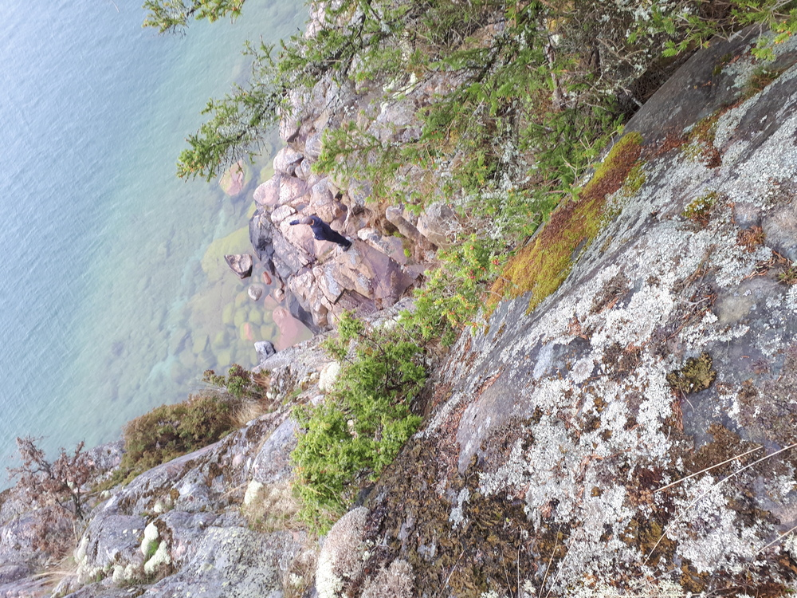</a>Fault from above.</p></div>`)[0];
            popup_8a6cfc77311f42aa8ee5c89cbd20ec68.setContent(html_c965fcedd51947a9a7a2cfd42a58f771);
        

        marker_08b45f812e4f42ef9031c91e945e4b15.bindPopup(popup_8a6cfc77311f42aa8ee5c89cbd20ec68)
        ;

        
    
    
            marker_08b45f812e4f42ef9031c91e945e4b15.bindTooltip(
                `<div>
                     JENG-2021-2
                 </div>`,
                {"sticky": true}
            );
        
    
            var marker_992be4d399fd4e78a1c2b29f21a51408 = L.marker(
                [60.22590505890548, 19.68289129436016],
                {}
            ).addTo(map_1257dd7fade54a548447e1b689e28b55);
        
    
            var icon_df1efaee19794b158a40e42f081eafce = L.AwesomeMarkers.icon(
                {"extraClasses": "fa-rotate-0", "icon": "glyphicon-stop", "iconColor": "white", "markerColor": "lightgray", "prefix": "glyphicon"}
            );
            marker_992be4d399fd4e78a1c2b29f21a51408.setIcon(icon_df1efaee19794b158a40e42f081eafce);
        
    
        var popup_8f0a7df3cd394ecdac8e67f9d0fe6300 = L.popup({"maxWidth": "100%"});

        
            var html_338cce4df62d47c3a59aced440409bc1 = $(`<div id="html_338cce4df62d47c3a59aced440409bc1" style="width: 100.0%; height: 100.0%;"><h3>JENG-2021-3</h3> <h4>Planar Structures</h4> <table> <thead> <tr> <th align="right">DIP</th> <th align="right">DIRECTION_OF_DIP</th> <th align="left">STYPE_TEXT</th> <th align="left">FOL_TYPE_TEXT</th> </tr> </thead> <tbody> <tr> <td align="right">87</td> <td align="right">190</td> <td align="left">Fault</td> <td align="left"></td> </tr> <tr> <td align="right">88</td> <td align="right">349</td> <td align="left">Fault</td> <td align="left"></td> </tr> <tr> <td align="right">83</td> <td align="right">158</td> <td align="left">Fault</td> <td align="left"></td> </tr> <tr> <td align="right">79</td> <td align="right">189</td> <td align="left">Fault</td> <td align="left"></td> </tr> <tr> <td align="right">81</td> <td align="right">202</td> <td align="left">Fault</td> <td align="left"></td> </tr> <tr> <td align="right">86</td> <td align="right">240</td> <td align="left">Fault</td> <td align="left"></td> </tr> </tbody> </table> <h4></h4> <h4></h4> <h4>Observation remarks</h4> <p>Rapakivi with sinistral hydrothermal fault. Measurements from W to E on outcrop. Classical step-over between to sinistral faults. Also a ~N-S fault last measurement.</p> <h4>Images</h4></div>`)[0];
            popup_8f0a7df3cd394ecdac8e67f9d0fe6300.setContent(html_338cce4df62d47c3a59aced440409bc1);
        

        marker_992be4d399fd4e78a1c2b29f21a51408.bindPopup(popup_8f0a7df3cd394ecdac8e67f9d0fe6300)
        ;

        
    
    
            marker_992be4d399fd4e78a1c2b29f21a51408.bindTooltip(
                `<div>
                     JENG-2021-3
                 </div>`,
                {"sticky": true}
            );
        
    
            var marker_e4adbc8702954f239648f9ecc3b9658e = L.marker(
                [60.232625543139875, 19.5356635004282],
                {}
            ).addTo(map_1257dd7fade54a548447e1b689e28b55);
        
    
            var icon_27f6be3470be4988bd415d0478ed2249 = L.AwesomeMarkers.icon(
                {"extraClasses": "fa-rotate-0", "icon": "glyphicon-stop", "iconColor": "white", "markerColor": "lightgray", "prefix": "glyphicon"}
            );
            marker_e4adbc8702954f239648f9ecc3b9658e.setIcon(icon_27f6be3470be4988bd415d0478ed2249);
        
    
        var popup_144448c11e3e4f57b9ee95e782b5f5d0 = L.popup({"maxWidth": "100%"});

        
            var html_beec30310da24f01ba8b6522e4a5ead7 = $(`<div id="html_beec30310da24f01ba8b6522e4a5ead7" style="width: 100.0%; height: 100.0%;"><h3>JENG-2021-4</h3> <h4>Planar Structures</h4> <table> <thead> <tr> <th align="right">DIP</th> <th align="right">DIRECTION_OF_DIP</th> <th align="left">STYPE_TEXT</th> <th align="left">FOL_TYPE_TEXT</th> </tr> </thead> <tbody> <tr> <td align="right">73</td> <td align="right">337</td> <td align="left">Fault</td> <td align="left"></td> </tr> <tr> <td align="right">84</td> <td align="right">297</td> <td align="left">Fault</td> <td align="left"></td> </tr> <tr> <td align="right">76</td> <td align="right">295</td> <td align="left">Fault</td> <td align="left"></td> </tr> </tbody> </table> <h4></h4> <h4></h4> <h4>Observation remarks</h4> <p>Rapakivi E-W fault. Uncertain kinematics, but extensional fractures seem to indicate sinistral movement.</p> <h4>Images</h4> <p><a href="kapalo_imgs/JENG-2021-4.k1@83604549515010682.jpg">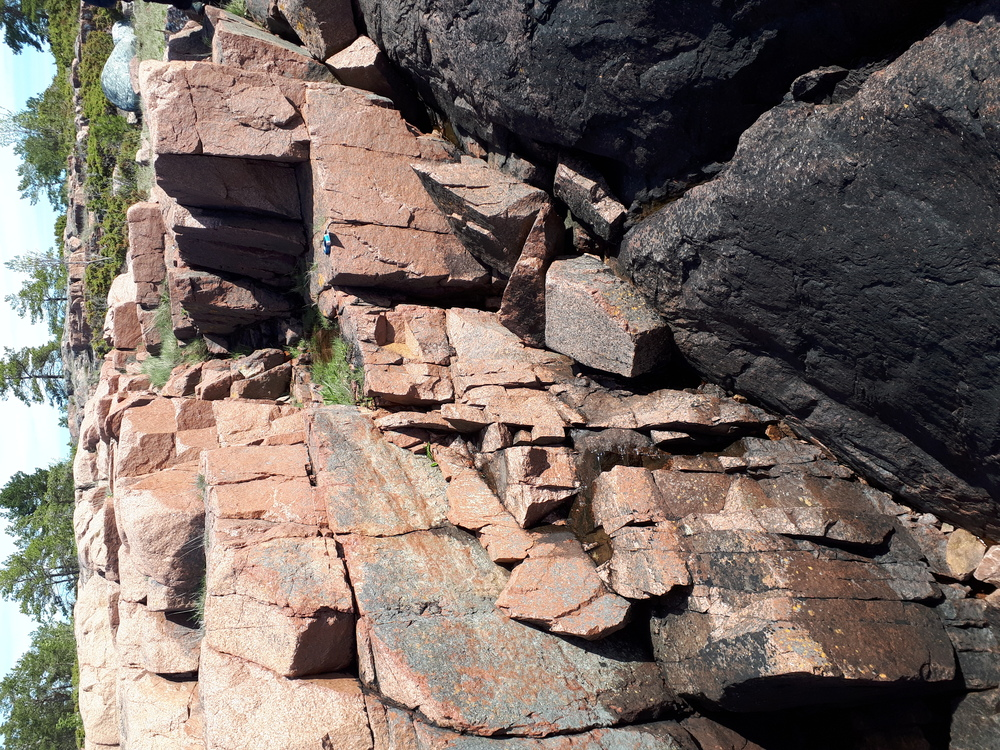</a>Photo along fault towards E.</p></div>`)[0];
            popup_144448c11e3e4f57b9ee95e782b5f5d0.setContent(html_beec30310da24f01ba8b6522e4a5ead7);
        

        marker_e4adbc8702954f239648f9ecc3b9658e.bindPopup(popup_144448c11e3e4f57b9ee95e782b5f5d0)
        ;

        
    
    
            marker_e4adbc8702954f239648f9ecc3b9658e.bindTooltip(
                `<div>
                     JENG-2021-4
                 </div>`,
                {"sticky": true}
            );
        
    
            var marker_c7a00e3db6d748b095d7a5b38c642e53 = L.marker(
                [60.23110192269087, 19.536603866145015],
                {}
            ).addTo(map_1257dd7fade54a548447e1b689e28b55);
        
    
            var icon_a2b94f7469924e8fb2bc22b49142d866 = L.AwesomeMarkers.icon(
                {"extraClasses": "fa-rotate-0", "icon": "glyphicon-stop", "iconColor": "white", "markerColor": "lightgray", "prefix": "glyphicon"}
            );
            marker_c7a00e3db6d748b095d7a5b38c642e53.setIcon(icon_a2b94f7469924e8fb2bc22b49142d866);
        
    
        var popup_94325d30c41e4d88944527517cd4d2e2 = L.popup({"maxWidth": "100%"});

        
            var html_94dc96c651ba4a608dbaed40d8fccb11 = $(`<div id="html_94dc96c651ba4a608dbaed40d8fccb11" style="width: 100.0%; height: 100.0%;"><h3>JENG-2021-5</h3> <h4>Planar Structures</h4> <table> <thead> <tr> <th align="right">DIP</th> <th align="right">DIRECTION_OF_DIP</th> <th align="left">STYPE_TEXT</th> <th align="left">FOL_TYPE_TEXT</th> </tr> </thead> <tbody> <tr> <td align="right">83</td> <td align="right">144</td> <td align="left">Fault</td> <td align="left"></td> </tr> <tr> <td align="right">85</td> <td align="right">189</td> <td align="left">Fault</td> <td align="left"></td> </tr> <tr> <td align="right">89</td> <td align="right">351</td> <td align="left">Fault</td> <td align="left"></td> </tr> </tbody> </table> <h4></h4> <h4></h4> <h4>Observation remarks</h4> <p>NE-SW orientated fault in Rapakivi. Clear hydrothermal alteration with quartz filling in fault. Measurements 2-3 are extensional fracturing.</p> <h4>Images</h4> <p><a href="kapalo_imgs/JENG-2021-5.k1@6661866512202191482.jpg">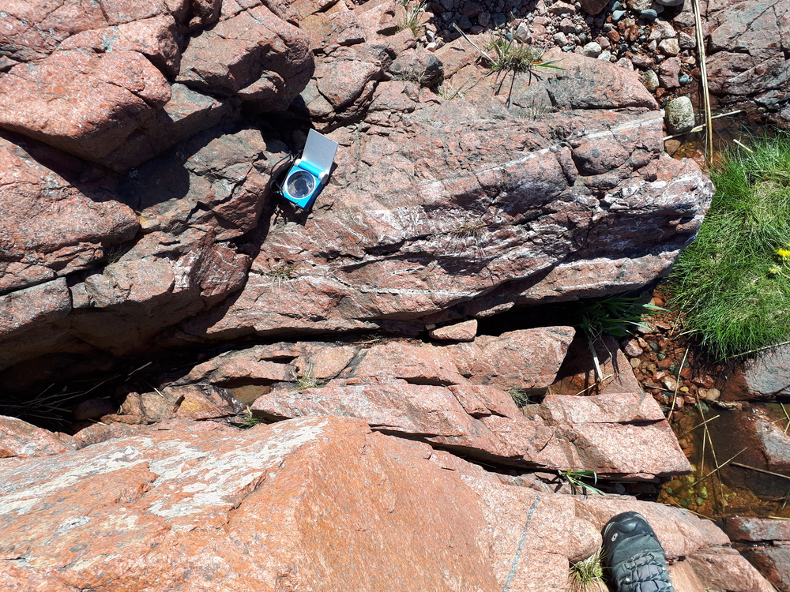</a>Main fault <a href="kapalo_imgs/JENG-2021-5.k2@799533466720694217.jpg">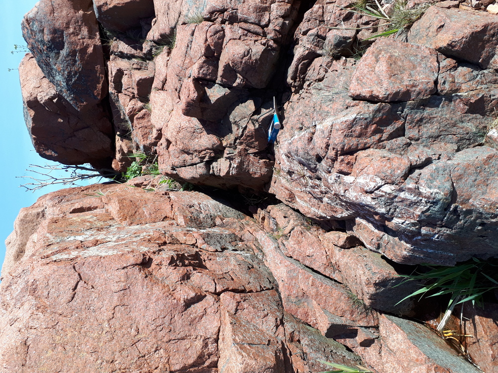</a>Along fault towards NE</p></div>`)[0];
            popup_94325d30c41e4d88944527517cd4d2e2.setContent(html_94dc96c651ba4a608dbaed40d8fccb11);
        

        marker_c7a00e3db6d748b095d7a5b38c642e53.bindPopup(popup_94325d30c41e4d88944527517cd4d2e2)
        ;

        
    
    
            marker_c7a00e3db6d748b095d7a5b38c642e53.bindTooltip(
                `<div>
                     JENG-2021-5
                 </div>`,
                {"sticky": true}
            );
        
    
            var marker_2bc0949d139f48e98baede89bd9efee6 = L.marker(
                [60.25046508293599, 19.522160841152072],
                {}
            ).addTo(map_1257dd7fade54a548447e1b689e28b55);
        
    
            var icon_8bd370ecb4154bbe99530352a62f2312 = L.AwesomeMarkers.icon(
                {"extraClasses": "fa-rotate-0", "icon": "glyphicon-stop", "iconColor": "white", "markerColor": "lightgray", "prefix": "glyphicon"}
            );
            marker_2bc0949d139f48e98baede89bd9efee6.setIcon(icon_8bd370ecb4154bbe99530352a62f2312);
        
    
        var popup_b2c7685f3b5f4a0fbdb96ab1acd71a46 = L.popup({"maxWidth": "100%"});

        
            var html_9f5682aacdde4c4e9b4123d5f08a5e13 = $(`<div id="html_9f5682aacdde4c4e9b4123d5f08a5e13" style="width: 100.0%; height: 100.0%;"><h3>JENG-2021-6</h3> <h4>Planar Structures</h4> <table> <thead> <tr> <th align="right">DIP</th> <th align="right">DIRECTION_OF_DIP</th> <th align="left">STYPE_TEXT</th> <th align="left">FOL_TYPE_TEXT</th> </tr> </thead> <tbody> <tr> <td align="right">88</td> <td align="right">145</td> <td align="left">Fault</td> <td align="left"></td> </tr> <tr> <td align="right">87</td> <td align="right">321</td> <td align="left">Fault</td> <td align="left"></td> </tr> <tr> <td align="right">89</td> <td align="right">180</td> <td align="left">Fault</td> <td align="left"></td> </tr> <tr> <td align="right">89</td> <td align="right">333</td> <td align="left">Fault</td> <td align="left"></td> </tr> <tr> <td align="right">88</td> <td align="right">12</td> <td align="left">Fault</td> <td align="left"></td> </tr> <tr> <td align="right">89</td> <td align="right">356</td> <td align="left">Fault</td> <td align="left"></td> </tr> <tr> <td align="right">89</td> <td align="right">141</td> <td align="left">Fault</td> <td align="left"></td> </tr> </tbody> </table> <h4></h4> <h4></h4> <h4>Observation remarks</h4> <p>Rapakivi with severe hydrothermal faults and fractures. Main fault orientation NE-SW. The fault have fault breccia and quartz. Main fault  possibly dextral. The last fault #7 is displacing fault #6.</p> <h4>Images</h4> <p><a href="kapalo_imgs/JENG-2021-6.k1@8857327056242677147.jpg">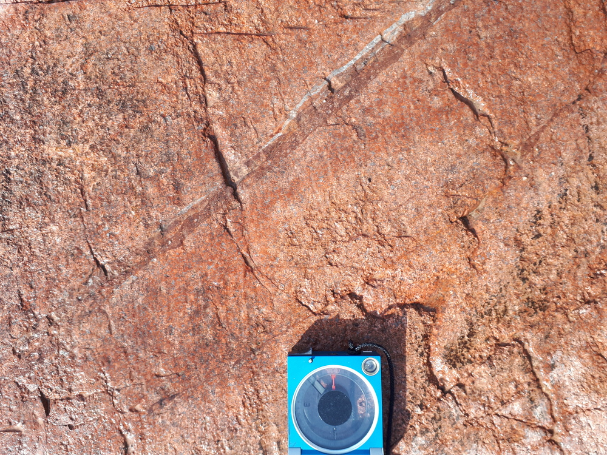</a>Main fault <a href="kapalo_imgs/JENG-2021-6.k2@3923352744239319103.jpg">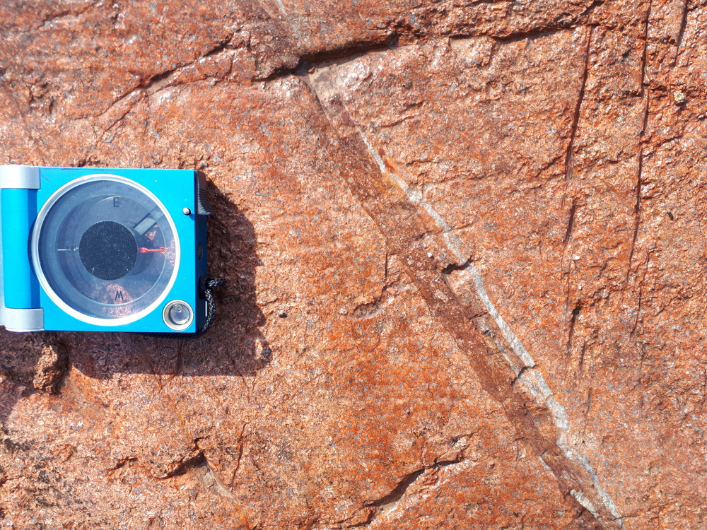</a>Main fault <a href="kapalo_imgs/JENG-2021-6.k3@8782151536614645799.jpg">('Fault #6 &amp; #7', 'JENG-2021-6.k3')</a> <a href="kapalo_imgs/JENG-2021-6.k4@8018021332290025911.jpg">('Step-over ', 'JENG-2021-6.k4')</a></p></div>`)[0];
            popup_b2c7685f3b5f4a0fbdb96ab1acd71a46.setContent(html_9f5682aacdde4c4e9b4123d5f08a5e13);
        

        marker_2bc0949d139f48e98baede89bd9efee6.bindPopup(popup_b2c7685f3b5f4a0fbdb96ab1acd71a46)
        ;

        
    
    
            marker_2bc0949d139f48e98baede89bd9efee6.bindTooltip(
                `<div>
                     JENG-2021-6
                 </div>`,
                {"sticky": true}
            );
        
    
            var marker_ec2539ac665941e2a07438f003dbe214 = L.marker(
                [60.22963001858443, 19.536126852035522],
                {}
            ).addTo(map_1257dd7fade54a548447e1b689e28b55);
        
    
            var icon_26fc19d878a345f38bf1cc939e384895 = L.AwesomeMarkers.icon(
                {"extraClasses": "fa-rotate-0", "icon": "glyphicon-stop", "iconColor": "white", "markerColor": "lightgray", "prefix": "glyphicon"}
            );
            marker_ec2539ac665941e2a07438f003dbe214.setIcon(icon_26fc19d878a345f38bf1cc939e384895);
        
    
        var popup_357b1b4ae84648aab4dae3a1cbb78a80 = L.popup({"maxWidth": "100%"});

        
            var html_db60e4626e474933aca989573afe4006 = $(`<div id="html_db60e4626e474933aca989573afe4006" style="width: 100.0%; height: 100.0%;"><h3>JENG-2021-7</h3> <h4>Planar Structures</h4> <table> <thead> <tr> <th align="right">DIP</th> <th align="right">DIRECTION_OF_DIP</th> <th align="left">STYPE_TEXT</th> <th align="left">FOL_TYPE_TEXT</th> </tr> </thead> <tbody> <tr> <td align="right">88</td> <td align="right">326</td> <td align="left">Fault</td> <td align="left"></td> </tr> <tr> <td align="right">84</td> <td align="right">358</td> <td align="left">Fault</td> <td align="left"></td> </tr> <tr> <td align="right">81</td> <td align="right">2</td> <td align="left">Fault</td> <td align="left"></td> </tr> </tbody> </table> <h4></h4> <h4></h4> <h4>Observation remarks</h4> <p>Rapakivi with dextral fault with classical step-over.</p> <h4>Images</h4> <p><a href="kapalo_imgs/JENG-2021-7.k1@4876781378486370637.jpg">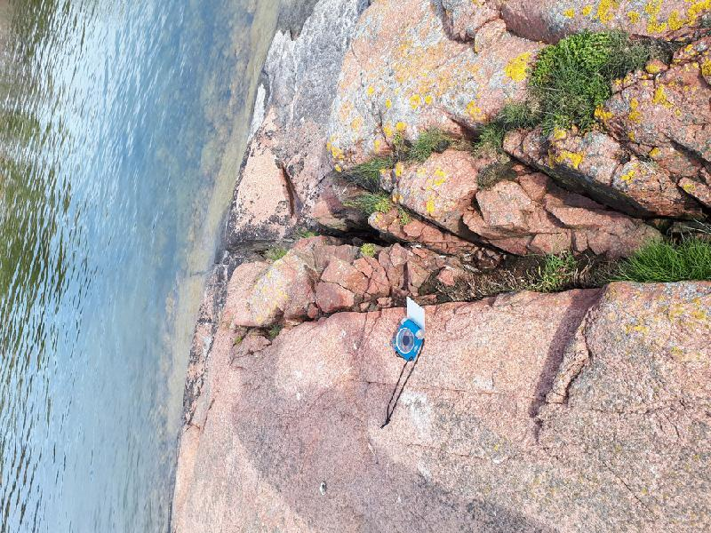</a>Näin fault and step-over dextral.</p></div>`)[0];
            popup_357b1b4ae84648aab4dae3a1cbb78a80.setContent(html_db60e4626e474933aca989573afe4006);
        

        marker_ec2539ac665941e2a07438f003dbe214.bindPopup(popup_357b1b4ae84648aab4dae3a1cbb78a80)
        ;

        
    
    
            marker_ec2539ac665941e2a07438f003dbe214.bindTooltip(
                `<div>
                     JENG-2021-7
                 </div>`,
                {"sticky": true}
            );
        
    
            var marker_bcb6922a079b46608388bd5869c6a042 = L.marker(
                [60.22857712581754, 19.534468157216907],
                {}
            ).addTo(map_1257dd7fade54a548447e1b689e28b55);
        
    
            var icon_1d0fc4ade3df4b508148955e15addc94 = L.AwesomeMarkers.icon(
                {"extraClasses": "fa-rotate-0", "icon": "glyphicon-stop", "iconColor": "white", "markerColor": "lightgray", "prefix": "glyphicon"}
            );
            marker_bcb6922a079b46608388bd5869c6a042.setIcon(icon_1d0fc4ade3df4b508148955e15addc94);
        
    
        var popup_f4e91e11105344b590c884ddbbbd2f02 = L.popup({"maxWidth": "100%"});

        
            var html_275549237867468987e25e066dec2470 = $(`<div id="html_275549237867468987e25e066dec2470" style="width: 100.0%; height: 100.0%;"><h3>JENG-2021-8</h3> <h4>Planar Structures</h4> <table> <thead> <tr> <th align="right">DIP</th> <th align="right">DIRECTION_OF_DIP</th> <th align="left">STYPE_TEXT</th> <th align="left">FOL_TYPE_TEXT</th> </tr> </thead> <tbody> <tr> <td align="right">89</td> <td align="right">26</td> <td align="left">Fault</td> <td align="left"></td> </tr> <tr> <td align="right">89</td> <td align="right">237</td> <td align="left">Fault</td> <td align="left"></td> </tr> <tr> <td align="right">88</td> <td align="right">62</td> <td align="left">Fault</td> <td align="left"></td> </tr> </tbody> </table> <h4></h4> <h4></h4> <h4>Observation remarks</h4> <p>Classical dextral fault with some hydrothermal alteration.</p> <h4>Images</h4> <p><a href="kapalo_imgs/JENG-2021-8.k1@624841673750049480.jpg">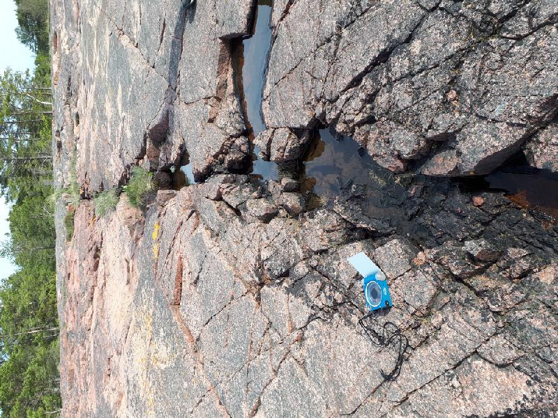</a>Along fault towards SE <a href="kapalo_imgs/JENG-2021-8.k2@6261782221383283929.jpg">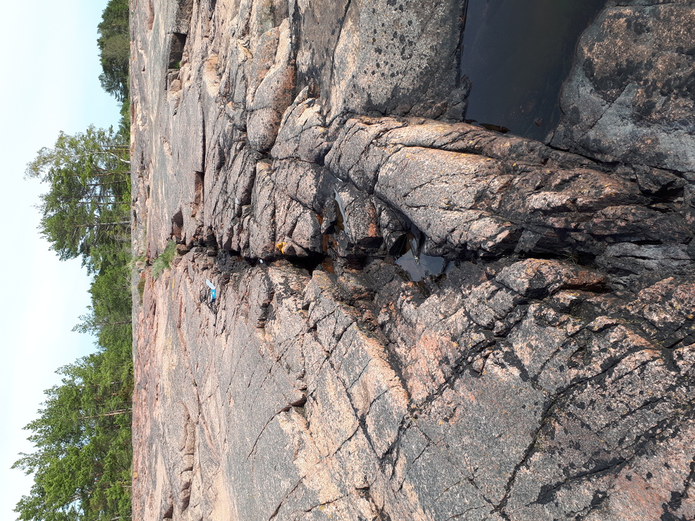</a>Along fault towards SE</p></div>`)[0];
            popup_f4e91e11105344b590c884ddbbbd2f02.setContent(html_275549237867468987e25e066dec2470);
        

        marker_bcb6922a079b46608388bd5869c6a042.bindPopup(popup_f4e91e11105344b590c884ddbbbd2f02)
        ;

        
    
    
            marker_bcb6922a079b46608388bd5869c6a042.bindTooltip(
                `<div>
                     JENG-2021-8
                 </div>`,
                {"sticky": true}
            );
        
    
            var marker_5add9134c1d5493986dc712f9dfc48c8 = L.marker(
                [60.2282620081678, 19.53459095209837],
                {}
            ).addTo(map_1257dd7fade54a548447e1b689e28b55);
        
    
            var icon_788a371b7e17467eb261e5f7bd12d567 = L.AwesomeMarkers.icon(
                {"extraClasses": "fa-rotate-0", "icon": "glyphicon-stop", "iconColor": "white", "markerColor": "lightgray", "prefix": "glyphicon"}
            );
            marker_5add9134c1d5493986dc712f9dfc48c8.setIcon(icon_788a371b7e17467eb261e5f7bd12d567);
        
    
        var popup_379565c63132421cb54a7298c0601ee7 = L.popup({"maxWidth": "100%"});

        
            var html_068172e27432459d80731fde4d16a209 = $(`<div id="html_068172e27432459d80731fde4d16a209" style="width: 100.0%; height: 100.0%;"><h3>JENG-2021-9</h3> <h4>Planar Structures</h4> <table> <thead> <tr> <th align="right">DIP</th> <th align="right">DIRECTION_OF_DIP</th> <th align="left">STYPE_TEXT</th> <th align="left">FOL_TYPE_TEXT</th> </tr> </thead> <tbody> <tr> <td align="right">87</td> <td align="right">126</td> <td align="left">Fault</td> <td align="left"></td> </tr> <tr> <td align="right">89</td> <td align="right">331</td> <td align="left">Fault</td> <td align="left"></td> </tr> <tr> <td align="right">88</td> <td align="right">139</td> <td align="left">Fault</td> <td align="left"></td> </tr> <tr> <td align="right">86</td> <td align="right">328</td> <td align="left">Fault</td> <td align="left"></td> </tr> </tbody> </table> <h4></h4> <h4></h4> <h4>Observation remarks</h4> <p>Several hydrothermal faults with distinct alteration halo.</p> <h4>Images</h4> <p><a href="kapalo_imgs/JENG-2021-9.k1@4655809258233919522.jpg">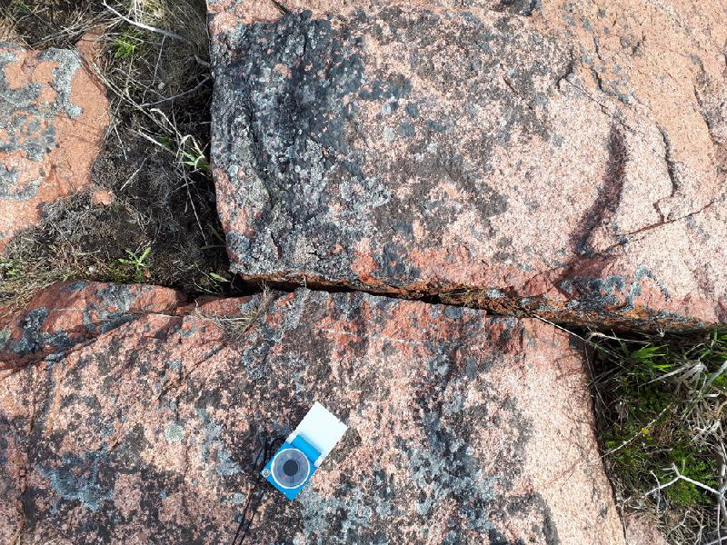</a>Most eastern fault</p></div>`)[0];
            popup_379565c63132421cb54a7298c0601ee7.setContent(html_068172e27432459d80731fde4d16a209);
        

        marker_5add9134c1d5493986dc712f9dfc48c8.bindPopup(popup_379565c63132421cb54a7298c0601ee7)
        ;

        
    
    
            marker_5add9134c1d5493986dc712f9dfc48c8.bindTooltip(
                `<div>
                     JENG-2021-9
                 </div>`,
                {"sticky": true}
            );
        
    
            var marker_47a6374109f74a17b502e005bc556f28 = L.marker(
                [60.164454518817365, 19.789619743824005],
                {}
            ).addTo(map_1257dd7fade54a548447e1b689e28b55);
        
    
            var icon_b712107bc8a8475b9c9c74453ffaa037 = L.AwesomeMarkers.icon(
                {"extraClasses": "fa-rotate-23", "icon": "glyphicon-arrow-up", "iconColor": "white", "markerColor": "blue", "prefix": "glyphicon"}
            );
            marker_47a6374109f74a17b502e005bc556f28.setIcon(icon_b712107bc8a8475b9c9c74453ffaa037);
        
    
        var popup_065e7eef89b846e7a63eeea39010d5ae = L.popup({"maxWidth": "100%"});

        
            var html_d601b44a838e4b5bafb932509838312a = $(`<div id="html_d601b44a838e4b5bafb932509838312a" style="width: 100.0%; height: 100.0%;"><h3>JENG-2021-10</h3> <h4>Planar Structures</h4> <table> <thead> <tr> <th align="right">DIP</th> <th align="right">DIRECTION_OF_DIP</th> <th align="left">STYPE_TEXT</th> <th align="left">FOL_TYPE_TEXT</th> </tr> </thead> <tbody> <tr> <td align="right">83</td> <td align="right">297</td> <td align="left">Fault</td> <td align="left"></td> </tr> </tbody> </table> <h4>Linear Structures</h4> <table> <thead> <tr> <th align="right">DIRECTION</th> <th align="right">PLUNGE</th> <th align="left">STYPE_TEXT</th> </tr> </thead> <tbody> <tr> <td align="right">23</td> <td align="right">5</td> <td align="left">Lineation</td> </tr> </tbody> </table> <h4></h4> <h4>Observation remarks</h4> <p>Dextral fault with distinct fault gouge and clay almost 10 cm thick. An excellent location for sample.</p> <h4>Images</h4> <p><a href="kapalo_imgs/JENG-2021-10.k1@4749691382803194223.jpg">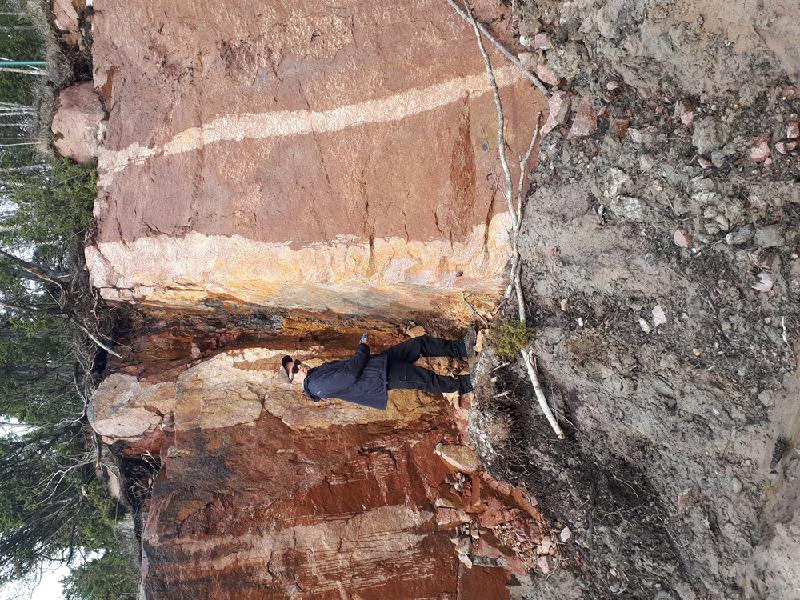</a>Along fault towards NE</p></div>`)[0];
            popup_065e7eef89b846e7a63eeea39010d5ae.setContent(html_d601b44a838e4b5bafb932509838312a);
        

        marker_47a6374109f74a17b502e005bc556f28.bindPopup(popup_065e7eef89b846e7a63eeea39010d5ae)
        ;

        
    
    
            marker_47a6374109f74a17b502e005bc556f28.bindTooltip(
                `<div>
                     JENG-2021-10
                 </div>`,
                {"sticky": true}
            );
        
    
            var marker_cdd511ab846946538f74177c1501649c = L.marker(
                [60.16569797415286, 19.789319252595305],
                {}
            ).addTo(map_1257dd7fade54a548447e1b689e28b55);
        
    
            var icon_530db2f772284f408520b121afd4e1b0 = L.AwesomeMarkers.icon(
                {"extraClasses": "fa-rotate-212", "icon": "glyphicon-arrow-up", "iconColor": "white", "markerColor": "blue", "prefix": "glyphicon"}
            );
            marker_cdd511ab846946538f74177c1501649c.setIcon(icon_530db2f772284f408520b121afd4e1b0);
        
    
        var popup_e5e4beae8e004204bda30ec841c9d3a6 = L.popup({"maxWidth": "100%"});

        
            var html_1e87e417e3d040a59b14b748e013f876 = $(`<div id="html_1e87e417e3d040a59b14b748e013f876" style="width: 100.0%; height: 100.0%;"><h3>JENG-2021-11</h3> <h4>Planar Structures</h4> <table> <thead> <tr> <th align="right">DIP</th> <th align="right">DIRECTION_OF_DIP</th> <th align="left">STYPE_TEXT</th> <th align="left">FOL_TYPE_TEXT</th> </tr> </thead> <tbody> <tr> <td align="right">88</td> <td align="right">306</td> <td align="left">Fault</td> <td align="left"></td> </tr> </tbody> </table> <h4>Linear Structures</h4> <table> <thead> <tr> <th align="right">DIRECTION</th> <th align="right">PLUNGE</th> <th align="left">STYPE_TEXT</th> </tr> </thead> <tbody> <tr> <td align="right">212</td> <td align="right">11</td> <td align="left">Lineation</td> </tr> </tbody> </table> <h4></h4> <h4>Observation remarks</h4> <p>Dextral fault with clay and fault gouge. The core of fault is approximately 4 cm. Sample is possible to take here. Lineation a bit uncertain.</p> <h4>Images</h4> <p><a href="kapalo_imgs/JENG-2021-11.k1@4747641618665199994.jpg">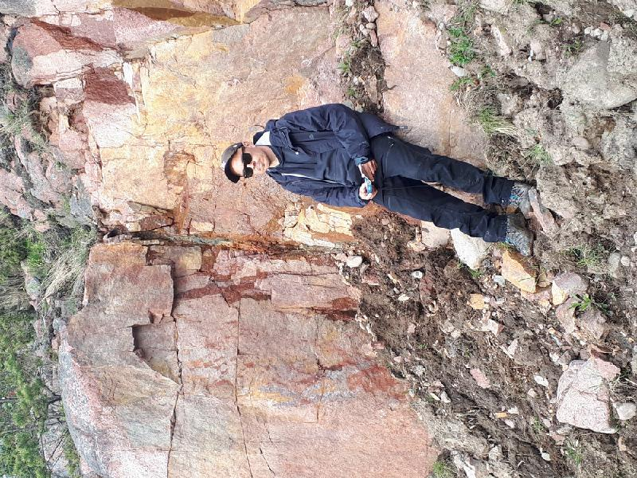</a>Along fault towards NE.</p></div>`)[0];
            popup_e5e4beae8e004204bda30ec841c9d3a6.setContent(html_1e87e417e3d040a59b14b748e013f876);
        

        marker_cdd511ab846946538f74177c1501649c.bindPopup(popup_e5e4beae8e004204bda30ec841c9d3a6)
        ;

        
    
    
            marker_cdd511ab846946538f74177c1501649c.bindTooltip(
                `<div>
                     JENG-2021-11
                 </div>`,
                {"sticky": true}
            );
        
    
            var marker_4d533f7b1e85488d9b396e81800709d0 = L.marker(
                [60.241896766237915, 19.536772845312953],
                {}
            ).addTo(map_1257dd7fade54a548447e1b689e28b55);
        
    
            var icon_acce81e713404fafb388acf052f87105 = L.AwesomeMarkers.icon(
                {"extraClasses": "fa-rotate-26", "icon": "glyphicon-arrow-up", "iconColor": "white", "markerColor": "blue", "prefix": "glyphicon"}
            );
            marker_4d533f7b1e85488d9b396e81800709d0.setIcon(icon_acce81e713404fafb388acf052f87105);
        
    
        var popup_77c89b1c5ed242868322aec52c348322 = L.popup({"maxWidth": "100%"});

        
            var html_daa4e1eaf9af4ecf80774b8b9db31309 = $(`<div id="html_daa4e1eaf9af4ecf80774b8b9db31309" style="width: 100.0%; height: 100.0%;"><h3>JENG-2021-12</h3> <h4>Planar Structures</h4> <table> <thead> <tr> <th align="right">DIP</th> <th align="right">DIRECTION_OF_DIP</th> <th align="left">STYPE_TEXT</th> <th align="left">FOL_TYPE_TEXT</th> </tr> </thead> <tbody> <tr> <td align="right">85</td> <td align="right">296</td> <td align="left">Fault</td> <td align="left"></td> </tr> <tr> <td align="right">76</td> <td align="right">70</td> <td align="left">Fault</td> <td align="left"></td> </tr> <tr> <td align="right">79</td> <td align="right">64</td> <td align="left">Fault</td> <td align="left"></td> </tr> <tr> <td align="right">89</td> <td align="right">300</td> <td align="left">Fault</td> <td align="left"></td> </tr> </tbody> </table> <h4>Linear Structures</h4> <table> <thead> <tr> <th align="right">DIRECTION</th> <th align="right">PLUNGE</th> <th align="left">STYPE_TEXT</th> </tr> </thead> <tbody> <tr> <td align="right">26</td> <td align="right">2</td> <td align="left">Lineation</td> </tr> </tbody> </table> <h4></h4> <h4>Observation remarks</h4> <p>Rapakivi with fault and sinistral step-over. The main fault first measurement and lineation on that surface.</p> <h4>Images</h4> <p><a href="kapalo_imgs/JENG-2021-12.k1@7423904233544270154.jpg">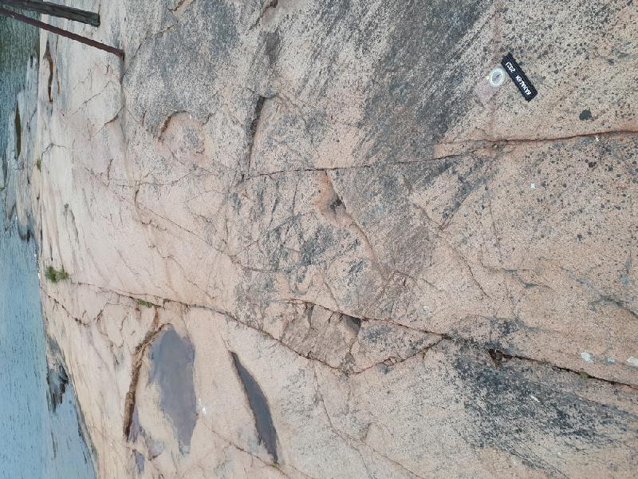</a>Fault towards NE.</p></div>`)[0];
            popup_77c89b1c5ed242868322aec52c348322.setContent(html_daa4e1eaf9af4ecf80774b8b9db31309);
        

        marker_4d533f7b1e85488d9b396e81800709d0.bindPopup(popup_77c89b1c5ed242868322aec52c348322)
        ;

        
    
    
            marker_4d533f7b1e85488d9b396e81800709d0.bindTooltip(
                `<div>
                     JENG-2021-12
                 </div>`,
                {"sticky": true}
            );
        
    
            var marker_207ea56c96714ce3a8ebe0bbab47e9a1 = L.marker(
                [60.24152632802725, 19.536798913031816],
                {}
            ).addTo(map_1257dd7fade54a548447e1b689e28b55);
        
    
            var icon_21601cd95a9e41f8844e596f8af15ec0 = L.AwesomeMarkers.icon(
                {"extraClasses": "fa-rotate-4", "icon": "glyphicon-arrow-up", "iconColor": "white", "markerColor": "blue", "prefix": "glyphicon"}
            );
            marker_207ea56c96714ce3a8ebe0bbab47e9a1.setIcon(icon_21601cd95a9e41f8844e596f8af15ec0);
        
    
        var popup_c9bd9c2bb9a948d69f1b8bf52fed03f7 = L.popup({"maxWidth": "100%"});

        
            var html_c2936089e017450cb4122c96750e708e = $(`<div id="html_c2936089e017450cb4122c96750e708e" style="width: 100.0%; height: 100.0%;"><h3>JENG-2021-13</h3> <h4>Planar Structures</h4> <table> <thead> <tr> <th align="right">DIP</th> <th align="right">DIRECTION_OF_DIP</th> <th align="left">STYPE_TEXT</th> <th align="left">FOL_TYPE_TEXT</th> </tr> </thead> <tbody> <tr> <td align="right">89</td> <td align="right">281</td> <td align="left">Fault</td> <td align="left"></td> </tr> <tr> <td align="right">84</td> <td align="right">37</td> <td align="left">Fault</td> <td align="left"></td> </tr> <tr> <td align="right">51</td> <td align="right">179</td> <td align="left">Fault</td> <td align="left"></td> </tr> <tr> <td align="right">79</td> <td align="right">11</td> <td align="left">Fault</td> <td align="left"></td> </tr> </tbody> </table> <h4>Linear Structures</h4> <table> <thead> <tr> <th align="right">DIRECTION</th> <th align="right">PLUNGE</th> <th align="left">STYPE_TEXT</th> </tr> </thead> <tbody> <tr> <td align="right">4</td> <td align="right">1</td> <td align="left">Lineation</td> </tr> </tbody> </table> <h4></h4> <h4>Observation remarks</h4> <p>Rapakivi with sinistral faults and hydrothermal alteration. First measurement is main fault with lineation. Second fault contains step-over sinistral.</p> <h4>Images</h4> <p><a href="kapalo_imgs/JENG-2021-13.k1@3109818707872926507.jpg">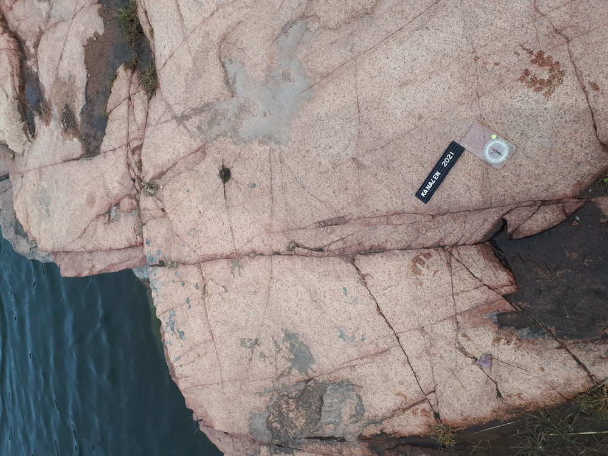</a>Sinistral step-over. <a href="kapalo_imgs/JENG-2021-13.k2@3011340726871970815.jpg">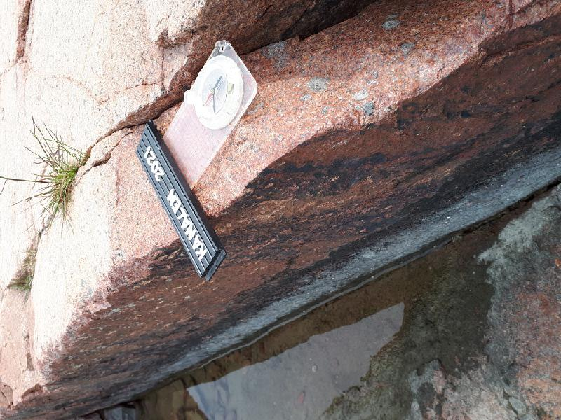</a>Lineation on fault #1</p></div>`)[0];
            popup_c9bd9c2bb9a948d69f1b8bf52fed03f7.setContent(html_c2936089e017450cb4122c96750e708e);
        

        marker_207ea56c96714ce3a8ebe0bbab47e9a1.bindPopup(popup_c9bd9c2bb9a948d69f1b8bf52fed03f7)
        ;

        
    
    
            marker_207ea56c96714ce3a8ebe0bbab47e9a1.bindTooltip(
                `<div>
                     JENG-2021-13
                 </div>`,
                {"sticky": true}
            );
        
    
            var marker_c2b1f91f80de4de58356e51d815554a1 = L.marker(
                [60.24201151449233, 19.536236906424165],
                {}
            ).addTo(map_1257dd7fade54a548447e1b689e28b55);
        
    
            var icon_b25b04c89bd6400488c63c2702a2905c = L.AwesomeMarkers.icon(
                {"extraClasses": "fa-rotate-0", "icon": "glyphicon-stop", "iconColor": "white", "markerColor": "lightgray", "prefix": "glyphicon"}
            );
            marker_c2b1f91f80de4de58356e51d815554a1.setIcon(icon_b25b04c89bd6400488c63c2702a2905c);
        
    
        var popup_701945f75c9a45168e8286296db0d1c8 = L.popup({"maxWidth": "100%"});

        
            var html_f469313a8075420fb686c7fe8ff6bf2d = $(`<div id="html_f469313a8075420fb686c7fe8ff6bf2d" style="width: 100.0%; height: 100.0%;"><h3>JENG-2021-14</h3> <h4>Planar Structures</h4> <table> <thead> <tr> <th align="right">DIP</th> <th align="right">DIRECTION_OF_DIP</th> <th align="left">STYPE_TEXT</th> <th align="left">FOL_TYPE_TEXT</th> </tr> </thead> <tbody> <tr> <td align="right">86</td> <td align="right">32</td> <td align="left">Fault</td> <td align="left"></td> </tr> <tr> <td align="right">88</td> <td align="right">181</td> <td align="left">Fault</td> <td align="left"></td> </tr> </tbody> </table> <h4></h4> <h4></h4> <h4>Observation remarks</h4> <p>Rapakivi with sinistral fault and classical step-over. First measurement is main fault.</p> <h4>Images</h4> <p><a href="kapalo_imgs/JENG-2021-14.k1@4822035787737482628.jpg">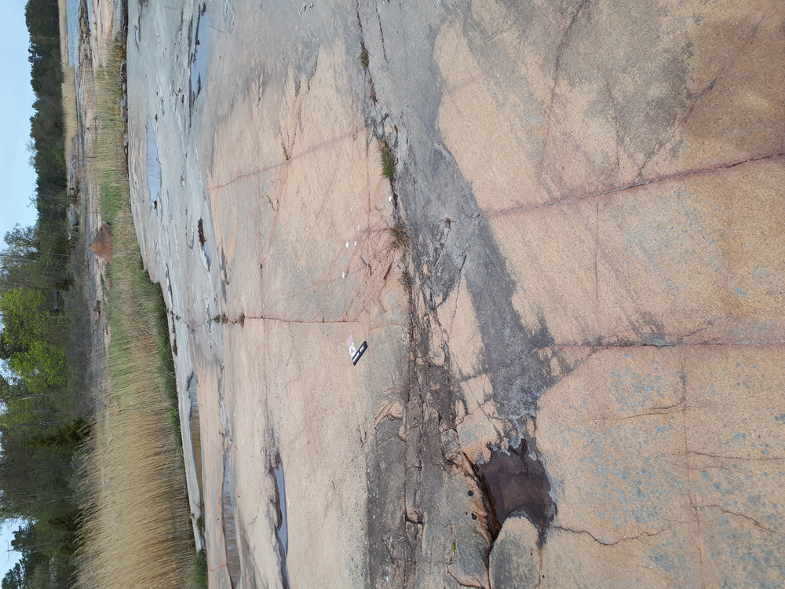</a>Main fault towards NW. <a href="kapalo_imgs/JENG-2021-14.k2@7927524283912396635.jpg">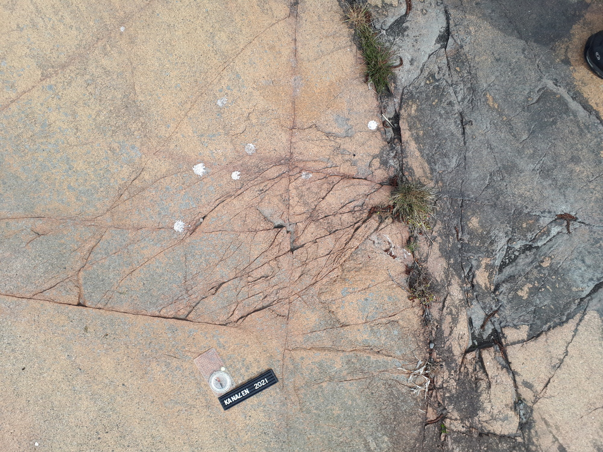</a>Close-up of step-over </p></div>`)[0];
            popup_701945f75c9a45168e8286296db0d1c8.setContent(html_f469313a8075420fb686c7fe8ff6bf2d);
        

        marker_c2b1f91f80de4de58356e51d815554a1.bindPopup(popup_701945f75c9a45168e8286296db0d1c8)
        ;

        
    
    
            marker_c2b1f91f80de4de58356e51d815554a1.bindTooltip(
                `<div>
                     JENG-2021-14
                 </div>`,
                {"sticky": true}
            );
        
    
            var marker_f06d120404f74220938515d79e1c15b3 = L.marker(
                [60.150419692508876, 19.593706838786602],
                {}
            ).addTo(map_1257dd7fade54a548447e1b689e28b55);
        
    
            var icon_655293a0de484d39a3a594303c09c1f1 = L.AwesomeMarkers.icon(
                {"extraClasses": "fa-rotate-0", "icon": "glyphicon-stop", "iconColor": "white", "markerColor": "lightgray", "prefix": "glyphicon"}
            );
            marker_f06d120404f74220938515d79e1c15b3.setIcon(icon_655293a0de484d39a3a594303c09c1f1);
        
    
        var popup_00128360848b47bcb1937c9aa80a4053 = L.popup({"maxWidth": "100%"});

        
            var html_5e9ead33f2a5418d97146879c2ca3f99 = $(`<div id="html_5e9ead33f2a5418d97146879c2ca3f99" style="width: 100.0%; height: 100.0%;"><h3>JENG-2021-15</h3> <h4>Planar Structures</h4> <table> <thead> <tr> <th align="right">DIP</th> <th align="right">DIRECTION_OF_DIP</th> <th align="left">STYPE_TEXT</th> <th align="left">FOL_TYPE_TEXT</th> </tr> </thead> <tbody> <tr> <td align="right">85</td> <td align="right">161</td> <td align="left">Fault</td> <td align="left"></td> </tr> <tr> <td align="right">81</td> <td align="right">16</td> <td align="left">Fault</td> <td align="left"></td> </tr> </tbody> </table> <h4></h4> <h4></h4> <h4>Observation remarks</h4> <p>Rapakivi in S ÅLAND. E-W dextral fault. Extensional fractures within fault.</p> <h4>Images</h4> <p><a href="kapalo_imgs/JENG-2021-15.k1@2803084204458660696.jpg">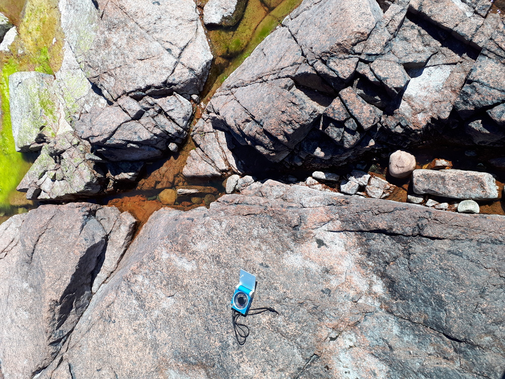</a>Along fault towards E.</p></div>`)[0];
            popup_00128360848b47bcb1937c9aa80a4053.setContent(html_5e9ead33f2a5418d97146879c2ca3f99);
        

        marker_f06d120404f74220938515d79e1c15b3.bindPopup(popup_00128360848b47bcb1937c9aa80a4053)
        ;

        
    
    
            marker_f06d120404f74220938515d79e1c15b3.bindTooltip(
                `<div>
                     JENG-2021-15
                 </div>`,
                {"sticky": true}
            );
        
    
            var marker_0ab77fff3386461eac208fc6eecc954d = L.marker(
                [60.15030938666314, 19.593618996441364],
                {}
            ).addTo(map_1257dd7fade54a548447e1b689e28b55);
        
    
            var icon_f29906a16bfc413c892914c0e5401b5a = L.AwesomeMarkers.icon(
                {"extraClasses": "fa-rotate-0", "icon": "glyphicon-stop", "iconColor": "white", "markerColor": "lightgray", "prefix": "glyphicon"}
            );
            marker_0ab77fff3386461eac208fc6eecc954d.setIcon(icon_f29906a16bfc413c892914c0e5401b5a);
        
    
        var popup_507d4d93681f4dc6a111b38eeaf11bf3 = L.popup({"maxWidth": "100%"});

        
            var html_dc7db794ee594ac0bcbf695228bfb950 = $(`<div id="html_dc7db794ee594ac0bcbf695228bfb950" style="width: 100.0%; height: 100.0%;"><h3>JENG-2021-16</h3> <h4>Planar Structures</h4> <table> <thead> <tr> <th align="right">DIP</th> <th align="right">DIRECTION_OF_DIP</th> <th align="left">STYPE_TEXT</th> <th align="left">FOL_TYPE_TEXT</th> </tr> </thead> <tbody> <tr> <td align="right">77</td> <td align="right">85</td> <td align="left">Fault</td> <td align="left"></td> </tr> <tr> <td align="right">82</td> <td align="right">99</td> <td align="left">Fault</td> <td align="left"></td> </tr> </tbody> </table> <h4></h4> <h4></h4> <h4>Observation remarks</h4> <p>A long N-S orientated fault, with dextral wing-cracks at northern end. Second measurement is wing-crack.</p> <h4>Images</h4> <p><a href="kapalo_imgs/JENG-2021-16.k1@3348614387129361741.jpg">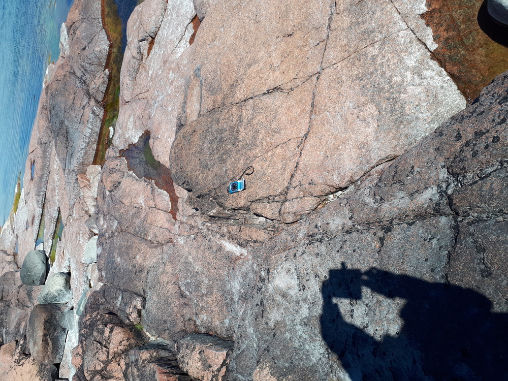</a>Northern end of fault with wing-cracks.</p></div>`)[0];
            popup_507d4d93681f4dc6a111b38eeaf11bf3.setContent(html_dc7db794ee594ac0bcbf695228bfb950);
        

        marker_0ab77fff3386461eac208fc6eecc954d.bindPopup(popup_507d4d93681f4dc6a111b38eeaf11bf3)
        ;

        
    
    
            marker_0ab77fff3386461eac208fc6eecc954d.bindTooltip(
                `<div>
                     JENG-2021-16
                 </div>`,
                {"sticky": true}
            );
        
    
            var marker_f1f75a764484472e91d717cdc6ff49ba = L.marker(
                [60.15123131219298, 19.592960933223367],
                {}
            ).addTo(map_1257dd7fade54a548447e1b689e28b55);
        
    
            var icon_ae2ca9d5814b49758670e680afdccae0 = L.AwesomeMarkers.icon(
                {"extraClasses": "fa-rotate-177", "icon": "glyphicon-arrow-up", "iconColor": "white", "markerColor": "blue", "prefix": "glyphicon"}
            );
            marker_f1f75a764484472e91d717cdc6ff49ba.setIcon(icon_ae2ca9d5814b49758670e680afdccae0);
        
    
        var popup_4b87217d89d14fe29e3854cad8955c21 = L.popup({"maxWidth": "100%"});

        
            var html_7d257e4d8855412f9451f413a40975c8 = $(`<div id="html_7d257e4d8855412f9451f413a40975c8" style="width: 100.0%; height: 100.0%;"><h3>JENG-2021-17</h3> <h4>Planar Structures</h4> <table> <thead> <tr> <th align="right">DIP</th> <th align="right">DIRECTION_OF_DIP</th> <th align="left">STYPE_TEXT</th> <th align="left">FOL_TYPE_TEXT</th> </tr> </thead> <tbody> <tr> <td align="right">80</td> <td align="right">72</td> <td align="left">Fault</td> <td align="left"></td> </tr> </tbody> </table> <h4>Linear Structures</h4> <table> <thead> <tr> <th align="right">DIRECTION</th> <th align="right">PLUNGE</th> <th align="left">STYPE_TEXT</th> </tr> </thead> <tbody> <tr> <td align="right">177</td> <td align="right">15</td> <td align="left">Lineation</td> </tr> </tbody> </table> <h4></h4> <h4>Observation remarks</h4> <p>A N-S orientated fault with steps that indicate sinistral kinematics. </p> <h4>Images</h4> <p><a href="kapalo_imgs/JENG-2021-17.k1@2510326467681478661.jpg">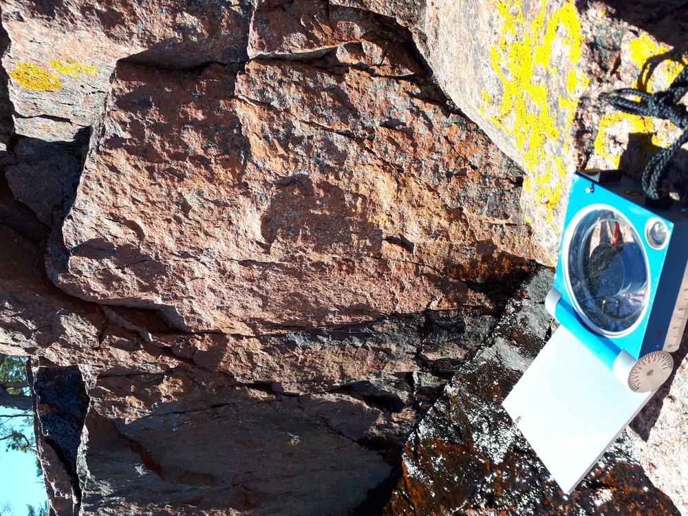</a>Fault surface with lineation.</p></div>`)[0];
            popup_4b87217d89d14fe29e3854cad8955c21.setContent(html_7d257e4d8855412f9451f413a40975c8);
        

        marker_f1f75a764484472e91d717cdc6ff49ba.bindPopup(popup_4b87217d89d14fe29e3854cad8955c21)
        ;

        
    
    
            marker_f1f75a764484472e91d717cdc6ff49ba.bindTooltip(
                `<div>
                     JENG-2021-17
                 </div>`,
                {"sticky": true}
            );
        
    
            var marker_2fcc7ee30409480d856e8134e44e0247 = L.marker(
                [60.15225306618959, 19.593757800757885],
                {}
            ).addTo(map_1257dd7fade54a548447e1b689e28b55);
        
    
            var icon_78db2f20df1741aba505321d2a283630 = L.AwesomeMarkers.icon(
                {"extraClasses": "fa-rotate-275", "icon": "glyphicon-arrow-up", "iconColor": "white", "markerColor": "blue", "prefix": "glyphicon"}
            );
            marker_2fcc7ee30409480d856e8134e44e0247.setIcon(icon_78db2f20df1741aba505321d2a283630);
        
    
        var popup_7a33f6cca62341e98b88b8726d333dd7 = L.popup({"maxWidth": "100%"});

        
            var html_690789031626469fb23b5743394aa3f9 = $(`<div id="html_690789031626469fb23b5743394aa3f9" style="width: 100.0%; height: 100.0%;"><h3>JENG-2021-18</h3> <h4>Planar Structures</h4> <table> <thead> <tr> <th align="right">DIP</th> <th align="right">DIRECTION_OF_DIP</th> <th align="left">STYPE_TEXT</th> <th align="left">FOL_TYPE_TEXT</th> </tr> </thead> <tbody> <tr> <td align="right">76</td> <td align="right">14</td> <td align="left">Fault</td> <td align="left"></td> </tr> <tr> <td align="right">89</td> <td align="right">345</td> <td align="left">Fault</td> <td align="left"></td> </tr> </tbody> </table> <h4>Linear Structures</h4> <table> <thead> <tr> <th align="right">DIRECTION</th> <th align="right">PLUNGE</th> <th align="left">STYPE_TEXT</th> </tr> </thead> <tbody> <tr> <td align="right">275</td> <td align="right">9</td> <td align="left">Lineation</td> </tr> </tbody> </table> <h4></h4> <h4>Observation remarks</h4> <p>Major E-W sinistral fault with a least 5 m damage zone. Extensional fractures within fault indicate sinistral kinematics. Uncertain kinematics but indication of sinistral movement.</p> <h4>Images</h4> <p><a href="kapalo_imgs/JENG-2021-18.k1@7520262726881542146.jpg">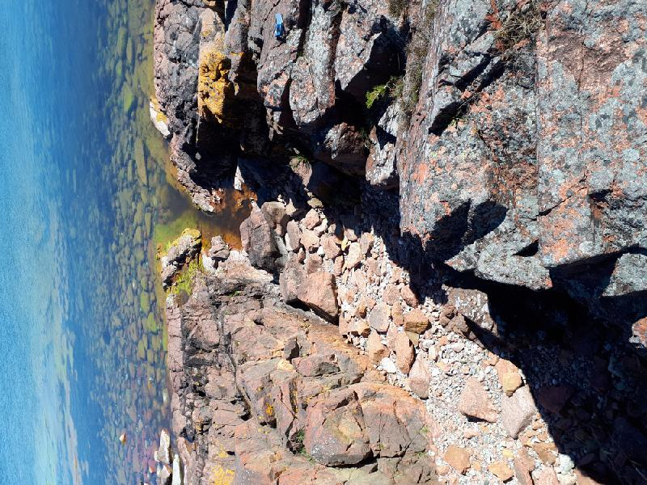</a>Along fault towards E.</p></div>`)[0];
            popup_7a33f6cca62341e98b88b8726d333dd7.setContent(html_690789031626469fb23b5743394aa3f9);
        

        marker_2fcc7ee30409480d856e8134e44e0247.bindPopup(popup_7a33f6cca62341e98b88b8726d333dd7)
        ;

        
    
    
            marker_2fcc7ee30409480d856e8134e44e0247.bindTooltip(
                `<div>
                     JENG-2021-18
                 </div>`,
                {"sticky": true}
            );
        
    
            var marker_d31e2ca73af941a590b9f6884cba9132 = L.marker(
                [59.968656529672444, 20.179603463038802],
                {}
            ).addTo(map_1257dd7fade54a548447e1b689e28b55);
        
    
            var icon_54ae30c21acc480283e93baef8681da0 = L.AwesomeMarkers.icon(
                {"extraClasses": "fa-rotate-0", "icon": "glyphicon-stop", "iconColor": "white", "markerColor": "lightgray", "prefix": "glyphicon"}
            );
            marker_d31e2ca73af941a590b9f6884cba9132.setIcon(icon_54ae30c21acc480283e93baef8681da0);
        
    
        var popup_862ec60368774607a3a53a926c0ff3e2 = L.popup({"maxWidth": "100%"});

        
            var html_f7b4e66375c0409588eec76af63daef1 = $(`<div id="html_f7b4e66375c0409588eec76af63daef1" style="width: 100.0%; height: 100.0%;"><h3>JENG-2021-19</h3> <h4>Planar Structures</h4> <table> <thead> <tr> <th align="right">DIP</th> <th align="right">DIRECTION_OF_DIP</th> <th align="left">STYPE_TEXT</th> <th align="left">FOL_TYPE_TEXT</th> </tr> </thead> <tbody> <tr> <td align="right">84</td> <td align="right">352</td> <td align="left">Fault</td> <td align="left"></td> </tr> <tr> <td align="right">87</td> <td align="right">346</td> <td align="left">Fault</td> <td align="left"></td> </tr> <tr> <td align="right">77</td> <td align="right">66</td> <td align="left">Fault</td> <td align="left"></td> </tr> <tr> <td align="right">83</td> <td align="right">26</td> <td align="left">Fault</td> <td align="left"></td> </tr> <tr> <td align="right">80</td> <td align="right">45</td> <td align="left">Fault</td> <td align="left"></td> </tr> </tbody> </table> <h4></h4> <h4></h4> <h4>Observation remarks</h4> <p>Rapakivi with E-W orientated shear zone with extensive amount of quartz and hydrothermal alteration. The biggest quartz veins are up to 25 cm wide thus it is a severe extensional event.</p> <h4>Images</h4> <p><a href="kapalo_imgs/JENG-2021-19.k1@6606283759853361914.jpg">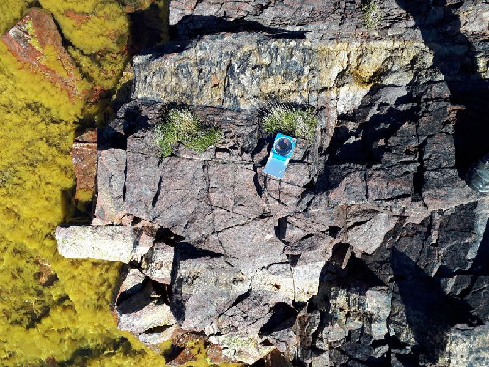</a>Main quartz  <a href="kapalo_imgs/JENG-2021-19.k2@7909208679314341079.jpg">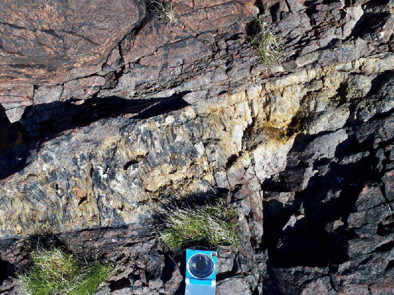</a>Main  quartz  <a href="kapalo_imgs/JENG-2021-19.k3@8397291409736513392.jpg">('Quartz veins.', 'JENG-2021-19.k3')</a> <a href="kapalo_imgs/JENG-2021-19.k4@8348381835955755458.jpg">('Quartz displacement ', 'JENG-2021-19.k4')</a></p></div>`)[0];
            popup_862ec60368774607a3a53a926c0ff3e2.setContent(html_f7b4e66375c0409588eec76af63daef1);
        

        marker_d31e2ca73af941a590b9f6884cba9132.bindPopup(popup_862ec60368774607a3a53a926c0ff3e2)
        ;

        
    
    
            marker_d31e2ca73af941a590b9f6884cba9132.bindTooltip(
                `<div>
                     JENG-2021-19
                 </div>`,
                {"sticky": true}
            );
        
    
        function geo_json_d12383edd76146599f3761ab81e304ee_styler(feature) {
            switch(feature.id) {
                default:
                    return {"color": "black", "weight": "1"};
            }
        }

        function geo_json_d12383edd76146599f3761ab81e304ee_onEachFeature(feature, layer) {
            layer.on({
            });
        };
        var geo_json_d12383edd76146599f3761ab81e304ee = L.geoJson(null, {
                onEachFeature: geo_json_d12383edd76146599f3761ab81e304ee_onEachFeature,
            
                style: geo_json_d12383edd76146599f3761ab81e304ee_styler,
        });

        function geo_json_d12383edd76146599f3761ab81e304ee_add (data) {
            geo_json_d12383edd76146599f3761ab81e304ee
                .addData(data)
                .addTo(map_1257dd7fade54a548447e1b689e28b55);
        }
            geo_json_d12383edd76146599f3761ab81e304ee_add({"features": [{"bbox": [21.962707183493634, 62.31573868935977, 22.29804281410901, 62.65803200932344], "geometry": {"coordinates": [[21.962707183493634, 62.31573868935977], [22.07502048789023, 62.37371652011293], [22.126505220297414, 62.41273774135412], [22.164534661293384, 62.438258885551555], [22.200266738936897, 62.46789427366378], [22.24907224962, 62.49391104594748], [22.286928448297868, 62.52452151139834], [22.295085426111424, 62.55115227076191], [22.29804281410901, 62.56048433954932], [22.27542653179787, 62.65803200932344]], "type": "LineString"}, "id": "0", "properties": {"Certainty": "2_Geoph_AND_LiDAR", "Data_Sourc": "LiDAR+EM", "Date": "2019-10-29", "Fault_Syst": null, "Geological": null, "Lineament1": null, "Lineament_": "INT_LiDAR_A653", "OBJECTID": 51, "Observatio": null, "Operator": "Aaltonen I.", "Orient": 27.24, "Remarks": null, "Scale": "1:500 000", "Sets": 0, "Shape_Leng": 43802.6965819, "Structure_": null}, "type": "Feature"}, {"bbox": [22.164534661293384, 62.2278882459805, 22.338351732246874, 62.438258885551555], "geometry": {"coordinates": [[22.338351732246874, 62.2278882459805], [22.267111593951096, 62.276881467766735], [22.253620303739332, 62.32353622002892], [22.24861036139506, 62.34549509968311], [22.243881538165976, 62.37531629745073], [22.22695258342046, 62.39472476833669], [22.164534661293384, 62.438258885551555]], "type": "LineString"}, "id": "1", "properties": {"Certainty": "Geophysical_OR_LiDAR", "Data_Sourc": "LiDAR", "Date": "2019-10-29", "Fault_Syst": null, "Geological": null, "Lineament1": null, "Lineament_": "INT_LiDAR_A654", "OBJECTID": 52, "Observatio": null, "Operator": "Aaltonen I.", "Orient": 163.19, "Remarks": null, "Scale": "1:500 000", "Sets": 1, "Shape_Leng": 25806.1298416, "Structure_": null}, "type": "Feature"}, {"bbox": [22.438263897250092, 62.48774770132774, 22.77701606326154, 62.5776675373826], "geometry": {"coordinates": [[22.438263897250092, 62.48774770132774], [22.525497114472124, 62.4967221602548], [22.603974176270462, 62.51920180115053], [22.65375458707336, 62.53788923161124], [22.715093737219917, 62.56262153095926], [22.77701606326154, 62.5776675373826]], "type": "LineString"}, "id": "2", "properties": {"Certainty": "2_Geoph_AND_LiDAR", "Data_Sourc": "LiDAR+EM", "Date": "2019-10-29", "Fault_Syst": null, "Geological": null, "Lineament1": null, "Lineament_": "INT_LiDAR_A657", "OBJECTID": 55, "Observatio": null, "Operator": "Aaltonen I.", "Orient": 64.01, "Remarks": null, "Scale": "1:500 000", "Sets": 0, "Shape_Leng": 20459.5717192, "Structure_": null}, "type": "Feature"}, {"bbox": [22.356858303412885, 62.51756254533697, 22.84292635813758, 62.89877734204455], "geometry": {"coordinates": [[22.356858303412885, 62.51756254533697], [22.404607851735044, 62.59107674963419], [22.40736615949979, 62.62328750921368], [22.433407469929513, 62.66553869791692], [22.470652165069648, 62.696012207186826], [22.73366663004482, 62.83271415445354], [22.84292635813758, 62.89877734204455]], "type": "LineString"}, "id": "3", "properties": {"Certainty": "2_Geoph_AND_LiDAR", "Data_Sourc": "LiDAR+Mag+EM", "Date": "2019-10-29", "Fault_Syst": null, "Geological": null, "Lineament1": null, "Lineament_": "INT_LiDAR_A685", "OBJECTID": 80, "Observatio": null, "Operator": "Aaltonen I.", "Orient": 34.26, "Remarks": null, "Scale": "1:500 000", "Sets": 0, "Shape_Leng": 50490.6002599, "Structure_": null}, "type": "Feature"}, {"bbox": [22.35418978054765, 62.6889096956523, 22.46196368390022, 62.86725845337478], "geometry": {"coordinates": [[22.373008591766396, 62.86725845337478], [22.35418978054765, 62.81930489170993], [22.363392526406653, 62.80274995372286], [22.390267695225134, 62.77137946917603], [22.400920883784664, 62.75781278178869], [22.432415652940993, 62.7230697801176], [22.46196368390022, 62.6889096956523]], "type": "LineString"}, "id": "4", "properties": {"Certainty": "1_Geoph_OR_LiDAR", "Data_Sourc": "LiDAR", "Date": "2019-11-04", "Fault_Syst": null, "Geological": null, "Lineament1": null, "Lineament_": "INT_LiDAR_B1067", "OBJECTID": 274, "Observatio": null, "Operator": "Hietava J.", "Orient": 171.21, "Remarks": null, "Scale": "1:200 000", "Sets": 1, "Shape_Leng": 20993.4017082, "Structure_": null}, "type": "Feature"}, {"bbox": [22.097433345865362, 62.511833798806386, 22.14695467724469, 62.62494057365841], "geometry": {"coordinates": [[22.097433345865362, 62.511833798806386], [22.140767477385676, 62.542860673432266], [22.143711784967813, 62.57532836716052], [22.14695467724469, 62.62494057365841]], "type": "LineString"}, "id": "5", "properties": {"Certainty": "1_Geoph_OR_LiDAR", "Data_Sourc": "LiDAR", "Date": "2019-11-04", "Fault_Syst": null, "Geological": null, "Lineament1": null, "Lineament_": "INT_LiDAR_B1085", "OBJECTID": 292, "Observatio": null, "Operator": "Hietava J.", "Orient": 15.75, "Remarks": null, "Scale": "1:200 000", "Sets": 0, "Shape_Leng": 13274.1782502, "Structure_": null}, "type": "Feature"}, {"bbox": [21.778511227716912, 62.42365744506973, 22.142767163371282, 62.51278761541188], "geometry": {"coordinates": [[22.142767163371282, 62.42365744506973], [22.030044835225002, 62.45364501937595], [21.945632353049167, 62.47869141320579], [21.892942889479563, 62.492002987564135], [21.83490471252522, 62.49914517637875], [21.806766461235814, 62.50995394757499], [21.778511227716912, 62.51278761541188]], "type": "LineString"}, "id": "6", "properties": {"Certainty": "2_Geoph_AND_LiDAR", "Data_Sourc": "LiDAR+EM", "Date": "2019-11-05", "Fault_Syst": null, "Geological": null, "Lineament1": null, "Lineament_": "INT_LiDAR_B1090", "OBJECTID": 297, "Observatio": null, "Operator": "Hietava J.", "Orient": 122.33, "Remarks": null, "Scale": "1:200 000", "Sets": 1, "Shape_Leng": 21460.6552735, "Structure_": null}, "type": "Feature"}, {"bbox": [21.972900313514977, 62.68978418033504, 22.148948613107, 62.75245597919243], "geometry": {"coordinates": [[22.148948613107, 62.75245597919243], [22.060182574264854, 62.724605434746515], [21.98838680618457, 62.69539862881075], [21.972900313514977, 62.68978418033504]], "type": "LineString"}, "id": "7", "properties": {"Certainty": "2_Geoph_AND_LiDAR", "Data_Sourc": "LiDAR+Mag+EM", "Date": "2019-11-05", "Fault_Syst": null, "Geological": null, "Lineament1": null, "Lineament_": "INT_LiDAR_B1091", "OBJECTID": 298, "Observatio": null, "Operator": "Hietava J.", "Orient": 56.59, "Remarks": null, "Scale": "1:200 000", "Sets": 0, "Shape_Leng": 11421.5779545, "Structure_": null}, "type": "Feature"}, {"bbox": [22.040960848168186, 62.665768436042335, 22.256195129491044, 62.71679511149506], "geometry": {"coordinates": [[22.040960848168186, 62.71679511149506], [22.173111964497732, 62.67370665175513], [22.256195129491044, 62.665768436042335]], "type": "LineString"}, "id": "8", "properties": {"Certainty": "1_Geoph_OR_LiDAR", "Data_Sourc": "LiDAR", "Date": "2019-11-05", "Fault_Syst": null, "Geological": null, "Lineament1": null, "Lineament_": "INT_LiDAR_B1093", "OBJECTID": 300, "Observatio": null, "Operator": "Hietava J.", "Orient": 121.61, "Remarks": null, "Scale": "1:200 000", "Sets": 1, "Shape_Leng": 12650.3113868, "Structure_": null}, "type": "Feature"}, {"bbox": [22.124239541973665, 62.689671211951925, 22.390267695225134, 62.77137946917603], "geometry": {"coordinates": [[22.124239541973665, 62.689671211951925], [22.161702471702842, 62.70573215505167], [22.200314197013, 62.7232422242573], [22.25594013917075, 62.73846177157603], [22.390267695225134, 62.77137946917603]], "type": "LineString"}, "id": "9", "properties": {"Certainty": "2_Geoph_AND_LiDAR", "Data_Sourc": "LiDAR+Mag", "Date": "2019-11-05", "Fault_Syst": null, "Geological": null, "Lineament1": null, "Lineament_": "INT_LiDAR_B1094", "OBJECTID": 301, "Observatio": null, "Operator": "Hietava J./Martinkauppi A.", "Orient": 60.42, "Remarks": "LiDAR_B1094_M_B29", "Scale": "1:200 000", "Sets": 0, "Shape_Leng": 16500.7364334, "Structure_": null}, "type": "Feature"}, {"bbox": [22.247263147579265, 62.65925308532451, 22.429528634560384, 62.71147394598012], "geometry": {"coordinates": [[22.247263147579265, 62.71147394598012], [22.277206420294473, 62.696348669561786], [22.309044621272744, 62.68504555016416], [22.359033556817476, 62.67005589361925], [22.429528634560384, 62.65925308532451]], "type": "LineString"}, "id": "10", "properties": {"Certainty": "2_Geoph_AND_LiDAR", "Data_Sourc": "LiDAR+EM", "Date": "2019-11-05", "Fault_Syst": null, "Geological": null, "Lineament1": null, "Lineament_": "INT_LiDAR_B1096", "OBJECTID": 303, "Observatio": null, "Operator": "Hietava J.", "Orient": 126.09, "Remarks": null, "Scale": "1:200 000", "Sets": 1, "Shape_Leng": 11208.3165464, "Structure_": null}, "type": "Feature"}, {"bbox": [22.293128546410966, 62.690698043038445, 22.406656177683626, 62.75149275768981], "geometry": {"coordinates": [[22.293128546410966, 62.690698043038445], [22.320035180025123, 62.71419921533357], [22.351672455573222, 62.731974416545334], [22.38046484390942, 62.74270332248905], [22.406656177683626, 62.75149275768981]], "type": "LineString"}, "id": "11", "properties": {"Certainty": "1_Geoph_OR_LiDAR", "Data_Sourc": "LiDAR", "Date": "2019-11-05", "Fault_Syst": null, "Geological": null, "Lineament1": null, "Lineament_": "INT_LiDAR_B1097", "OBJECTID": 304, "Observatio": null, "Operator": "Hietava J.", "Orient": 44.73, "Remarks": null, "Scale": "1:200 000", "Sets": 0, "Shape_Leng": 9075.59357177, "Structure_": null}, "type": "Feature"}, {"bbox": [22.30511971723654, 62.686439827785954, 22.428716282673264, 62.72715541250079], "geometry": {"coordinates": [[22.428716282673264, 62.72715541250079], [22.370908219794238, 62.70661483786263], [22.324553701042277, 62.691750764919675], [22.30511971723654, 62.686439827785954]], "type": "LineString"}, "id": "12", "properties": {"Certainty": "1_Geoph_OR_LiDAR", "Data_Sourc": "LiDAR", "Date": "2019-11-05", "Fault_Syst": null, "Geological": null, "Lineament1": null, "Lineament_": "INT_LiDAR_B1098", "OBJECTID": 305, "Observatio": null, "Operator": "Hietava J.", "Orient": 58.46, "Remarks": null, "Scale": "1:200 000", "Sets": 0, "Shape_Leng": 7794.51346614, "Structure_": null}, "type": "Feature"}, {"bbox": [22.296770548498856, 62.5658357575161, 22.405307335602007, 62.59925015394867], "geometry": {"coordinates": [[22.405307335602007, 62.59925015394867], [22.35305480531246, 62.581290128651645], [22.296770548498856, 62.5658357575161]], "type": "LineString"}, "id": "13", "properties": {"Certainty": "1_Geoph_OR_LiDAR", "Data_Sourc": "LiDAR", "Date": "2019-11-05", "Fault_Syst": null, "Geological": null, "Lineament1": null, "Lineament_": "INT_LiDAR_B1099", "OBJECTID": 306, "Observatio": null, "Operator": "Hietava J.", "Orient": 60.14, "Remarks": null, "Scale": "1:200 000", "Sets": 0, "Shape_Leng": 6718.38053413, "Structure_": null}, "type": "Feature"}, {"bbox": [22.28387659474343, 62.579282596555714, 22.345735536256093, 62.693981970417546], "geometry": {"coordinates": [[22.28387659474343, 62.693981970417546], [22.296427732220128, 62.66142427884861], [22.303559044897337, 62.650718284613], [22.318858540246335, 62.638560269513924], [22.3310965758493, 62.62695365626476], [22.33488129939241, 62.617681348269784], [22.345735536256093, 62.579282596555714]], "type": "LineString"}, "id": "14", "properties": {"Certainty": "2_Geoph_AND_LiDAR", "Data_Sourc": "LiDAR+EM", "Date": "2019-11-05", "Fault_Syst": null, "Geological": null, "Lineament1": null, "Lineament_": "INT_LiDAR_B1100", "OBJECTID": 307, "Observatio": null, "Operator": "Hietava J.", "Orient": 170.22, "Remarks": null, "Scale": "1:200 000", "Sets": 1, "Shape_Leng": 13308.6617204, "Structure_": null}, "type": "Feature"}, {"bbox": [22.334470535601803, 62.618687992531385, 22.39006611408035, 62.713427838566304], "geometry": {"coordinates": [[22.39006611408035, 62.713427838566304], [22.379472372903912, 62.687671503133835], [22.369969893806957, 62.67376057798717], [22.3486845795455, 62.63645293171458], [22.342227432787872, 62.62451405557479], [22.334470535601803, 62.618687992531385]], "type": "LineString"}, "id": "15", "properties": {"Certainty": "1_Geoph_OR_LiDAR", "Data_Sourc": "LiDAR", "Date": "2019-11-05", "Fault_Syst": null, "Geological": null, "Lineament1": null, "Lineament_": "INT_LiDAR_B1101", "OBJECTID": 308, "Observatio": null, "Operator": "Hietava J.", "Orient": 18.31, "Remarks": null, "Scale": "1:200 000", "Sets": 0, "Shape_Leng": 10981.7156328, "Structure_": null}, "type": "Feature"}, {"bbox": [22.397347806919402, 62.56685585882692, 22.621658043684352, 62.583215783954714], "geometry": {"coordinates": [[22.621658043684352, 62.56685585882692], [22.56921281583219, 62.572667530128975], [22.541843577887562, 62.583215783954714], [22.432712734961132, 62.58159341072881], [22.397347806919402, 62.57992300178886]], "type": "LineString"}, "id": "16", "properties": {"Certainty": "2_Geoph_AND_LiDAR", "Data_Sourc": "LiDAR+EM", "Date": "2019-11-05", "Fault_Syst": null, "Geological": null, "Lineament1": null, "Lineament_": "INT_LiDAR_B1102", "OBJECTID": 309, "Observatio": null, "Operator": "Hietava J.", "Orient": 101.19, "Remarks": null, "Scale": "1.200 000", "Sets": 1, "Shape_Leng": 12048.6517403, "Structure_": null}, "type": "Feature"}, {"bbox": [22.45428758469144, 62.58192091640522, 22.581177430892673, 62.67292269751015], "geometry": {"coordinates": [[22.45428758469144, 62.58192091640522], [22.465622292152542, 62.609748927620764], [22.474054169018792, 62.63571684755676], [22.50003089862023, 62.648450408717814], [22.543177078548112, 62.664105383229085], [22.581177430892673, 62.67292269751015]], "type": "LineString"}, "id": "17", "properties": {"Certainty": "1_Geoph_OR_LiDAR", "Data_Sourc": "LiDAR", "Date": "2019-11-05", "Fault_Syst": null, "Geological": null, "Lineament1": null, "Lineament_": "INT_LiDAR_B1108", "OBJECTID": 315, "Observatio": null, "Operator": "Hietava J.", "Orient": 36.68, "Remarks": null, "Scale": "1:200 000", "Sets": 0, "Shape_Leng": 13030.8245996, "Structure_": null}, "type": "Feature"}, {"bbox": [22.524313080148833, 62.58296092243358, 22.605194492075093, 62.62892572192015], "geometry": {"coordinates": [[22.524313080148833, 62.58296092243358], [22.560114038287196, 62.613257898669225], [22.57671166002372, 62.62663030946553], [22.605194492075093, 62.62892572192015]], "type": "LineString"}, "id": "18", "properties": {"Certainty": "1_Geoph_OR_LiDAR", "Data_Sourc": "LiDAR", "Date": "2019-11-05", "Fault_Syst": null, "Geological": null, "Lineament1": null, "Lineament_": "INT_LiDAR_B1109", "OBJECTID": 316, "Observatio": null, "Operator": "Hietava J.", "Orient": 42.97, "Remarks": null, "Scale": "1:200 000", "Sets": 0, "Shape_Leng": 7047.34522141, "Structure_": null}, "type": "Feature"}, {"bbox": [22.493237274681608, 62.58250372521173, 22.552448476991856, 62.65060219030836], "geometry": {"coordinates": [[22.493237274681608, 62.58250372521173], [22.499201842871898, 62.619874730568114], [22.507905244186404, 62.63062253431269], [22.530948273606974, 62.64230427710025], [22.552448476991856, 62.65060219030836]], "type": "LineString"}, "id": "19", "properties": {"Certainty": "1_Geoph_OR_LiDAR", "Data_Sourc": "LiDAR", "Date": "2019-11-05", "Fault_Syst": null, "Geological": null, "Lineament1": null, "Lineament_": "INT_LiDAR_B1110", "OBJECTID": 317, "Observatio": null, "Operator": "Hietava J.", "Orient": 25.8, "Remarks": null, "Scale": "1:200 000", "Sets": 0, "Shape_Leng": 8654.82763934, "Structure_": null}, "type": "Feature"}, {"bbox": [22.426896214669046, 62.09437885765125, 22.524973765726013, 62.423068550312095], "geometry": {"coordinates": [[22.524973765726013, 62.09437885765125], [22.50226086008305, 62.10577037193246], [22.492791849044224, 62.1216399325234], [22.471920443393156, 62.145701008298666], [22.460502864571403, 62.174352938333676], [22.44327845130728, 62.20757181297176], [22.44102659368364, 62.24271052156383], [22.44356283684193, 62.27991008266476], [22.448784480885102, 62.31291486931147], [22.44866766508841, 62.327186363617734], [22.433488944946372, 62.339535780174295], [22.430451734306594, 62.35275966983827], [22.439355627284105, 62.36827941077258], [22.445664609697655, 62.39418190781649], [22.426896214669046, 62.423068550312095]], "type": "LineString"}, "id": "20", "properties": {"Certainty": "2_Geoph_AND_LiDAR", "Data_Sourc": "LiDAR+Mag", "Date": "2019-11-06", "Fault_Syst": null, "Geological": "Esker", "Lineament1": null, "Lineament_": "INT_LiDAR_B1216", "OBJECTID": 425, "Observatio": null, "Operator": "Hietava J.", "Orient": 176.09, "Remarks": null, "Scale": "1:200 000", "Sets": 1, "Shape_Leng": 38006.4572353, "Structure_": null}, "type": "Feature"}, {"bbox": [22.111111113351402, 62.43209436480034, 22.171442214595785, 62.53103503381272], "geometry": {"coordinates": [[22.111111113351402, 62.43209436480034], [22.119304182447923, 62.4593953489035], [22.12975178502865, 62.48355952484841], [22.15979685945751, 62.50126508446601], [22.171442214595785, 62.518327235007135], [22.1673197154039, 62.53103503381272]], "type": "LineString"}, "id": "21", "properties": {"Certainty": "1_Geoph_OR_LiDAR", "Data_Sourc": "LiDAR", "Date": "2019-11-06", "Fault_Syst": null, "Geological": null, "Lineament1": null, "Lineament_": "INT_LiDAR_B1236", "OBJECTID": 445, "Observatio": null, "Operator": "Hietava J.", "Orient": 19.04, "Remarks": null, "Scale": "1:200 000", "Sets": 0, "Shape_Leng": 11757.7242608, "Structure_": null}, "type": "Feature"}, {"bbox": [22.17789961176402, 62.394093567539755, 22.586289710714144, 62.44935127782906], "geometry": {"coordinates": [[22.17789961176402, 62.44935127782906], [22.25580618948479, 62.44126954968166], [22.318148300228984, 62.436718186400945], [22.35383164462583, 62.43838994697815], [22.383774865875452, 62.439431432179695], [22.43240467376172, 62.43564418134408], [22.461308991959537, 62.42718522010009], [22.50715530038756, 62.415825873898456], [22.548390979761084, 62.40763535780202], [22.57232307626864, 62.39840750243713], [22.586289710714144, 62.394093567539755]], "type": "LineString"}, "id": "22", "properties": {"Certainty": "2_Geoph_AND_LiDAR", "Data_Sourc": "LiDAR+Mag", "Date": "2019-11-06", "Fault_Syst": null, "Geological": null, "Lineament1": null, "Lineament_": "INT_LiDAR_B1238", "OBJECTID": 447, "Observatio": null, "Operator": "Hietava J.", "Orient": 110.36, "Remarks": null, "Scale": "1:200 000", "Sets": 1, "Shape_Leng": 22584.9590144, "Structure_": null}, "type": "Feature"}, {"bbox": [22.35733749974038, 62.43851222384926, 22.37824125147072, 62.54061512667074], "geometry": {"coordinates": [[22.35733749974038, 62.43851222384926], [22.371534789988754, 62.46770633726978], [22.37824125147072, 62.48228092387147], [22.3718059402256, 62.54061512667074]], "type": "LineString"}, "id": "23", "properties": {"Certainty": "2_Geoph_AND_LiDAR", "Data_Sourc": "LiDAR+EM", "Date": "2019-11-06", "Fault_Syst": null, "Geological": null, "Lineament1": null, "Lineament_": "INT_LiDAR_B1239", "OBJECTID": 448, "Observatio": null, "Operator": "Hietava J.", "Orient": 7.86, "Remarks": null, "Scale": "1:200 000", "Sets": 0, "Shape_Leng": 11509.5111271, "Structure_": null}, "type": "Feature"}, {"bbox": [22.482400914000454, 62.49229593375491, 22.48935728186594, 62.58244615592896], "geometry": {"coordinates": [[22.482400914000454, 62.49229593375491], [22.48265971470036, 62.53584515554583], [22.48935728186594, 62.58244615592896]], "type": "LineString"}, "id": "24", "properties": {"Certainty": "1_Geoph_OR_LiDAR", "Data_Sourc": "LiDAR", "Date": "2019-11-06", "Fault_Syst": null, "Geological": null, "Lineament1": null, "Lineament_": "INT_LiDAR_B1240", "OBJECTID": 449, "Observatio": null, "Operator": "Hietava J.", "Orient": 6.05, "Remarks": null, "Scale": "1:200 000", "Sets": 0, "Shape_Leng": 10061.6772987, "Structure_": null}, "type": "Feature"}, {"bbox": [22.24548668566662, 62.36520140024288, 22.344006213076902, 62.43793055580095], "geometry": {"coordinates": [[22.24548668566662, 62.36520140024288], [22.29716855296175, 62.39075567175986], [22.320523213370404, 62.40534468575769], [22.337995671514435, 62.41830454601986], [22.344006213076902, 62.43793055580095]], "type": "LineString"}, "id": "25", "properties": {"Certainty": "1_Geoph_OR_LiDAR", "Data_Sourc": "LiDAR", "Date": "2019-11-06", "Fault_Syst": null, "Geological": null, "Lineament1": null, "Lineament_": "INT_LiDAR_B1243", "OBJECTID": 452, "Observatio": null, "Operator": "Hietava J.", "Orient": 36.32, "Remarks": null, "Scale": "1:200 000", "Sets": 0, "Shape_Leng": 9848.34993027, "Structure_": null}, "type": "Feature"}, {"bbox": [22.446858857451563, 62.43141546961795, 22.681682499295118, 62.519915269947376], "geometry": {"coordinates": [[22.681682499295118, 62.519915269947376], [22.61971276326346, 62.491688641588155], [22.555035296145814, 62.470133233435156], [22.492567671379337, 62.44814131566139], [22.446858857451563, 62.43141546961795]], "type": "LineString"}, "id": "26", "properties": {"Certainty": "1_Geoph_OR_LiDAR", "Data_Sourc": "LiDAR", "Date": "2019-11-06", "Fault_Syst": null, "Geological": null, "Lineament1": null, "Lineament_": "INT_LiDAR_B1244", "OBJECTID": 453, "Observatio": null, "Operator": "Hietava J.", "Orient": 54.78, "Remarks": null, "Scale": "1:200 000", "Sets": 0, "Shape_Leng": 15654.4620793, "Structure_": null}, "type": "Feature"}, {"bbox": [22.400573556305453, 62.49195511974833, 22.479088428846957, 62.584879827682826], "geometry": {"coordinates": [[22.479088428846957, 62.49195511974833], [22.452253118066405, 62.517254355438766], [22.438445298367114, 62.53345787947283], [22.42301365257453, 62.55341392125845], [22.400573556305453, 62.584879827682826]], "type": "LineString"}, "id": "27", "properties": {"Certainty": "1_Geoph_OR_LiDAR", "Data_Sourc": "LiDAR", "Date": "2019-11-06", "Fault_Syst": null, "Geological": null, "Lineament1": null, "Lineament_": "INT_LiDAR_B1245", "OBJECTID": 454, "Observatio": null, "Operator": "Hietava J.", "Orient": 162.73, "Remarks": null, "Scale": "1:200 000", "Sets": 1, "Shape_Leng": 11138.1179551, "Structure_": null}, "type": "Feature"}, {"bbox": [22.17510291357003, 62.350554492347364, 22.18553439831299, 62.4236299569423], "geometry": {"coordinates": [[22.17955997287573, 62.350554492347364], [22.185275774442125, 62.36598306448302], [22.17863975029334, 62.38812243760306], [22.17510291357003, 62.40370600917431], [22.18553439831299, 62.4236299569423]], "type": "LineString"}, "id": "28", "properties": {"Certainty": "1_Geoph_OR_LiDAR", "Data_Sourc": "LiDAR", "Date": "2019-11-06", "Fault_Syst": null, "Geological": null, "Lineament1": null, "Lineament_": "INT_LiDAR_B1249", "OBJECTID": 458, "Observatio": null, "Operator": "Hietava J.", "Orient": 6.44, "Remarks": null, "Scale": "1:200 000", "Sets": 0, "Shape_Leng": 8270.56385328, "Structure_": null}, "type": "Feature"}, {"bbox": [21.840362657202558, 62.62205395711266, 22.854694232150525, 62.803301990380746], "geometry": {"coordinates": [[21.840362657202558, 62.62205395711266], [21.95695537350287, 62.681054023940625], [22.120440970576126, 62.74158461081823], [22.29450271020047, 62.772518630605624], [22.50791214875862, 62.803301990380746], [22.608148741435375, 62.79338801690766], [22.7303652306988, 62.7567197642802], [22.854694232150525, 62.72120342210075]], "type": "LineString"}, "id": "29", "properties": {"Certainty": "1_Geoph_OR_LiDAR", "Data_Sourc": "Mag+EM", "Date": "2019-12-11", "Fault_Syst": null, "Geological": null, "Lineament1": null, "Lineament_": "INT_M_554", "OBJECTID": 726, "Observatio": null, "Operator": "Martinkauppi A.", "Orient": 82.13, "Remarks": null, "Scale": "1:500 000", "Sets": 0, "Shape_Leng": 60791.5768033, "Structure_": null}, "type": "Feature"}, {"bbox": [22.443763318251445, 62.26264956631636, 23.014342397485333, 62.441353148121536], "geometry": {"coordinates": [[22.443763318251445, 62.441353148121536], [22.50240279114964, 62.384377219130805], [22.637911817484746, 62.35122791578584], [22.82067507177082, 62.30689638028557], [23.014342397485333, 62.26264956631636]], "type": "LineString"}, "id": "30", "properties": {"Certainty": "Geophysical_OR_LIDAR", "Data_Sourc": "Mag", "Date": "2019-12-11", "Fault_Syst": null, "Geological": null, "Lineament1": null, "Lineament_": "INT_M_560", "OBJECTID": 732, "Observatio": null, "Operator": "Martinkauppi A.", "Orient": 127.76, "Remarks": null, "Scale": "1:500 000", "Sets": 1, "Shape_Leng": 36853.5350117, "Structure_": null}, "type": "Feature"}, {"bbox": [22.309736979037357, 62.729283566111604, 22.688731702601206, 62.776343698893946], "geometry": {"coordinates": [[22.309736979037357, 62.729283566111604], [22.339342209157024, 62.73883680885622], [22.38423092463023, 62.7503147373344], [22.449010663475416, 62.76765821180145], [22.50379594535921, 62.776085599362325], [22.55672603230139, 62.776343698893946], [22.688731702601206, 62.754293907275034]], "type": "LineString"}, "id": "31", "properties": {"Certainty": "1_Geoph_OR_LiDAR", "Data_Sourc": "Mag+EM", "Date": "2019-12-16", "Fault_Syst": null, "Geological": null, "Lineament1": null, "Lineament_": "INT_M_B25", "OBJECTID": 786, "Observatio": null, "Operator": "Martinkauppi A.", "Orient": 85.82, "Remarks": null, "Scale": "1:200 000", "Sets": 0, "Shape_Leng": 21146.5095493, "Structure_": null}, "type": "Feature"}, {"bbox": [22.151257460512447, 62.69009767479667, 22.29745925165317, 62.741245406886634], "geometry": {"coordinates": [[22.151257460512447, 62.69009767479667], [22.202948985201644, 62.69711341937271], [22.247263147579265, 62.71147394598012], [22.29745925165317, 62.741245406886634]], "type": "LineString"}, "id": "32", "properties": {"Certainty": "Geophysical_OR_LIDAR", "Data_Sourc": "Mag", "Date": "2019-12-16", "Fault_Syst": null, "Geological": null, "Lineament1": null, "Lineament_": "INT_M_B26", "OBJECTID": 787, "Observatio": null, "Operator": "Martinkauppi A.", "Orient": 56.94, "Remarks": null, "Scale": "1:200 000", "Sets": 0, "Shape_Leng": 9734.61587798, "Structure_": null}, "type": "Feature"}, {"bbox": [22.184390291953534, 62.74740188674827, 22.378671811255852, 62.77915913190982], "geometry": {"coordinates": [[22.184390291953534, 62.74740188674827], [22.2297656934865, 62.75561572679494], [22.316987942279244, 62.768548541345176], [22.378671811255852, 62.77915913190982]], "type": "LineString"}, "id": "33", "properties": {"Certainty": "Geophysical_OR_LIDAR", "Data_Sourc": "Mag", "Date": "2019-12-16", "Fault_Syst": null, "Geological": null, "Lineament1": null, "Lineament_": "INT_M_B27", "OBJECTID": 788, "Observatio": null, "Operator": "Martinkauppi A.", "Orient": 74.57, "Remarks": null, "Scale": "1:200 000", "Sets": 0, "Shape_Leng": 10543.9120904, "Structure_": null}, "type": "Feature"}, {"bbox": [22.23431704810259, 62.74672801841597, 22.50715829527411, 62.78808851365691], "geometry": {"coordinates": [[22.23431704810259, 62.74672801841597], [22.306755712019346, 62.761068324957236], [22.423412820958085, 62.78538351156219], [22.458563122127448, 62.78652500739194], [22.50715829527411, 62.78808851365691]], "type": "LineString"}, "id": "34", "properties": {"Certainty": "Geophysical_OR_LIDAR", "Data_Sourc": "Mag", "Date": "2019-12-16", "Fault_Syst": null, "Geological": null, "Lineament1": null, "Lineament_": "INT_M_B28", "OBJECTID": 789, "Observatio": null, "Operator": "Martinkauppi A.", "Orient": 75.81, "Remarks": null, "Scale": "1:200 000", "Sets": 0, "Shape_Leng": 14865.9181198, "Structure_": null}, "type": "Feature"}, {"bbox": [22.17713947447043, 62.76000307716686, 22.383525846460046, 62.801208313083755], "geometry": {"coordinates": [[22.383525846460046, 62.801208313083755], [22.300411261432586, 62.78131922037834], [22.242961051695364, 62.770341317104176], [22.17713947447043, 62.76000307716686]], "type": "LineString"}, "id": "35", "properties": {"Certainty": "Geophysical_OR_LIDAR", "Data_Sourc": "Mag+EM", "Date": "2019-12-16", "Fault_Syst": null, "Geological": null, "Lineament1": null, "Lineament_": "INT_M_B30", "OBJECTID": 791, "Observatio": null, "Operator": "Martinkauppi A.", "Orient": 70.65, "Remarks": null, "Scale": "1:200 000", "Sets": 0, "Shape_Leng": 11522.1284226, "Structure_": null}, "type": "Feature"}, {"bbox": [22.13759115409843, 62.70390246929852, 22.239169811634696, 62.723097062231076], "geometry": {"coordinates": [[22.239169811634696, 62.723097062231076], [22.13759115409843, 62.70390246929852]], "type": "LineString"}, "id": "36", "properties": {"Certainty": "Geophysical_OR_LIDAR", "Data_Sourc": "Mag", "Date": "2019-12-16", "Fault_Syst": null, "Geological": null, "Lineament1": null, "Lineament_": "INT_M_B31", "OBJECTID": 792, "Observatio": null, "Operator": "Martinkauppi A.", "Orient": 71.91, "Remarks": null, "Scale": "1:200 000", "Sets": 0, "Shape_Leng": 5622.64047951, "Structure_": null}, "type": "Feature"}, {"bbox": [22.060767163680485, 62.64266728496323, 22.11922028524871, 62.69130882969877], "geometry": {"coordinates": [[22.11922028524871, 62.69130882969877], [22.060767163680485, 62.64266728496323]], "type": "LineString"}, "id": "37", "properties": {"Certainty": "Geophysical_OR_LIDAR", "Data_Sourc": "Mag", "Date": "2019-12-16", "Fault_Syst": null, "Geological": null, "Lineament1": null, "Lineament_": "INT_M_B32", "OBJECTID": 793, "Observatio": null, "Operator": "Martinkauppi A.", "Orient": 33.29, "Remarks": null, "Scale": "1:200 000", "Sets": 0, "Shape_Leng": 6196.32382625, "Structure_": null}, "type": "Feature"}, {"bbox": [21.9371078027433, 62.60968159020932, 22.05040549722219, 62.64277689822342], "geometry": {"coordinates": [[22.05040549722219, 62.64277689822342], [21.9371078027433, 62.60968159020932]], "type": "LineString"}, "id": "38", "properties": {"Certainty": "Geophysical_OR_LIDAR", "Data_Sourc": "Mag", "Date": "2019-12-16", "Fault_Syst": null, "Geological": null, "Lineament1": null, "Lineament_": "INT_M_B33", "OBJECTID": 794, "Observatio": null, "Operator": "Martinkauppi A.", "Orient": 62.06, "Remarks": null, "Scale": "1:200 000", "Sets": 0, "Shape_Leng": 6888.53630581, "Structure_": null}, "type": "Feature"}, {"bbox": [22.008902126357402, 62.66293252952518, 22.0995057799556, 62.70956799538372], "geometry": {"coordinates": [[22.008902126357402, 62.66293252952518], [22.0995057799556, 62.70956799538372]], "type": "LineString"}, "id": "39", "properties": {"Certainty": "Geophysical_OR_LIDAR", "Data_Sourc": "Mag", "Date": "2019-12-16", "Fault_Syst": null, "Geological": null, "Lineament1": null, "Lineament_": "INT_M_B90", "OBJECTID": 851, "Observatio": null, "Operator": "Martinkauppi A.", "Orient": 46.15, "Remarks": null, "Scale": "1:200 000", "Sets": 0, "Shape_Leng": 6970.47925071, "Structure_": null}, "type": "Feature"}, {"bbox": [22.470554803439445, 62.36189849217332, 22.57765620507119, 62.481284395679], "geometry": {"coordinates": [[22.470554803439445, 62.481284395679], [22.497976819708516, 62.42221951114503], [22.572073311295014, 62.36735972359918], [22.57765620507119, 62.36189849217332]], "type": "LineString"}, "id": "40", "properties": {"Certainty": "Geophysical_OR_LIDAR", "Data_Sourc": "Mag", "Date": "2019-12-16", "Fault_Syst": null, "Geological": null, "Lineament1": null, "Lineament_": "INT_M_B92", "OBJECTID": 853, "Observatio": null, "Operator": "Martinkauppi A.", "Orient": 161.39, "Remarks": null, "Scale": "1:200 000", "Sets": 1, "Shape_Leng": 14626.9101751, "Structure_": null}, "type": "Feature"}, {"bbox": [22.506921644155515, 62.3991463224179, 22.572206331134854, 62.45831403661701], "geometry": {"coordinates": [[22.506921644155515, 62.45831403661701], [22.537223340045117, 62.418844694683095], [22.572206331134854, 62.3991463224179]], "type": "LineString"}, "id": "41", "properties": {"Certainty": "Geophysical_OR_LIDAR", "Data_Sourc": "Mag", "Date": "2019-12-16", "Fault_Syst": null, "Geological": null, "Lineament1": null, "Lineament_": "INT_M_B93", "OBJECTID": 854, "Observatio": null, "Operator": "Martinkauppi A.", "Orient": 156.87, "Remarks": null, "Scale": "1:200 000", "Sets": 1, "Shape_Leng": 7515.25043841, "Structure_": null}, "type": "Feature"}, {"bbox": [22.516182268913045, 62.41840111442136, 22.616814160100393, 62.49073000476889], "geometry": {"coordinates": [[22.516182268913045, 62.49073000476889], [22.616814160100393, 62.41840111442136]], "type": "LineString"}, "id": "42", "properties": {"Certainty": "Geophysical_OR_LIDAR", "Data_Sourc": "Mag", "Date": "2019-12-16", "Fault_Syst": null, "Geological": null, "Lineament1": null, "Lineament_": "INT_M_B94", "OBJECTID": 855, "Observatio": null, "Operator": "Martinkauppi A.", "Orient": 151.14, "Remarks": null, "Scale": "1:200 000", "Sets": 1, "Shape_Leng": 9592.07730329, "Structure_": null}, "type": "Feature"}, {"bbox": [22.348541818475667, 62.54941376399146, 22.424425314245678, 62.66003659395735], "geometry": {"coordinates": [[22.424425314245678, 62.66003659395735], [22.39445677232148, 62.63230828235602], [22.37062272523492, 62.59297608847942], [22.348541818475667, 62.54941376399146]], "type": "LineString"}, "id": "43", "properties": {"Certainty": "Geophysical_OR_LIDAR", "Data_Sourc": "Mag", "Date": "2019-12-19", "Fault_Syst": null, "Geological": null, "Lineament1": null, "Lineament_": "INT_M_B191", "OBJECTID": 952, "Observatio": null, "Operator": "Martinkauppi A.", "Orient": 21.63, "Remarks": null, "Scale": "1:200 000", "Sets": 0, "Shape_Leng": 12992.8794235, "Structure_": null}, "type": "Feature"}, {"bbox": [22.372928027089632, 62.54234418248617, 22.47301772127104, 62.64228813189303], "geometry": {"coordinates": [[22.47301772127104, 62.64228813189303], [22.414487874257627, 62.583002290479044], [22.372928027089632, 62.54234418248617]], "type": "LineString"}, "id": "44", "properties": {"Certainty": "Geophysical_OR_LIDAR", "Data_Sourc": "Mag", "Date": "2019-12-19", "Fault_Syst": null, "Geological": null, "Lineament1": null, "Lineament_": "INT_M_B193", "OBJECTID": 954, "Observatio": null, "Operator": "Martinkauppi A.", "Orient": 28.85, "Remarks": null, "Scale": "1:200 000", "Sets": 0, "Shape_Leng": 12272.6799506, "Structure_": null}, "type": "Feature"}, {"bbox": [22.380225177596895, 62.58296092243358, 22.524313080148833, 62.63870436800931], "geometry": {"coordinates": [[22.380225177596895, 62.63870436800931], [22.524313080148833, 62.58296092243358]], "type": "LineString"}, "id": "45", "properties": {"Certainty": "1_Geoph_OR_LiDAR", "Data_Sourc": "EM", "Date": "2019-11-13", "Fault_Syst": null, "Geological": null, "Lineament1": null, "Lineament_": "INT_EM_455", "OBJECTID": 1048, "Observatio": null, "Operator": "Martinkauppi A.", "Orient": 134.21, "Remarks": null, "Scale": "1:500 000", "Sets": 1, "Shape_Leng": 9663.63096579, "Structure_": null}, "type": "Feature"}, {"bbox": [22.388384548150523, 62.66240922203286, 22.68422442527229, 62.735058918373696], "geometry": {"coordinates": [[22.68422442527229, 62.66240922203286], [22.388384548150523, 62.735058918373696]], "type": "LineString"}, "id": "46", "properties": {"Certainty": "1_Geoph_OR_LiDAR", "Data_Sourc": "EM", "Date": "2019-11-13", "Fault_Syst": null, "Geological": null, "Lineament1": null, "Lineament_": "INT_EM_484", "OBJECTID": 1077, "Observatio": null, "Operator": "Martinkauppi A.", "Orient": 122.1, "Remarks": null, "Scale": "1:500 000", "Sets": 1, "Shape_Leng": 17178.0957496, "Structure_": null}, "type": "Feature"}, {"bbox": [22.388502684557785, 62.70361522994132, 22.419283469651315, 62.76803568917378], "geometry": {"coordinates": [[22.419283469651315, 62.70361522994132], [22.388502684557785, 62.76803568917378]], "type": "LineString"}, "id": "47", "properties": {"Certainty": "1_Geoph_OR_LiDAR", "Data_Sourc": "EM", "Date": "2019-11-18", "Fault_Syst": null, "Geological": null, "Lineament1": null, "Lineament_": "INT_EM_515", "OBJECTID": 1108, "Observatio": null, "Operator": "Martinkauppi A.", "Orient": 171.72, "Remarks": null, "Scale": "1:500 000", "Sets": 1, "Shape_Leng": 7352.62318118, "Structure_": null}, "type": "Feature"}, {"bbox": [22.511094509075033, 62.661663522032434, 22.98779705894593, 62.7006136308212], "geometry": {"coordinates": [[22.511094509075033, 62.66740865993344], [22.586532749749253, 62.68650895749771], [22.658848535880775, 62.7006136308212], [22.731377707215003, 62.70046323095859], [22.802506160560952, 62.69190852136418], [22.88555026494911, 62.67177718691563], [22.928073859004282, 62.663506812853534], [22.98779705894593, 62.661663522032434]], "type": "LineString"}, "id": "48", "properties": {"Certainty": "1_Geoph_OR_LiDAR", "Data_Sourc": "EM", "Date": "2019-12-09", "Fault_Syst": null, "Geological": null, "Lineament1": null, "Lineament_": "INT_EM_522", "OBJECTID": 1115, "Observatio": null, "Operator": "Martinkauppi A.", "Orient": 95.28, "Remarks": null, "Scale": "1:500 000", "Sets": 1, "Shape_Leng": 26160.7273831, "Structure_": null}, "type": "Feature"}, {"bbox": [22.141166571509565, 62.537513376399836, 22.332781632689976, 62.5749964917553], "geometry": {"coordinates": [[22.141166571509565, 62.5749964917553], [22.332781632689976, 62.537513376399836]], "type": "LineString"}, "id": "49", "properties": {"Certainty": "1_Geoph_OR_LiDAR", "Data_Sourc": "EM", "Date": "2019-12-11", "Fault_Syst": null, "Geological": null, "Lineament1": null, "Lineament_": "INT_EM_893", "OBJECTID": 1167, "Observatio": null, "Operator": "Martinkauppi A.", "Orient": 117.2, "Remarks": null, "Scale": "1:500 000", "Sets": 1, "Shape_Leng": 10709.1115682, "Structure_": null}, "type": "Feature"}, {"bbox": [22.336293646971097, 62.3554484156673, 22.578964792190217, 62.43425346400073], "geometry": {"coordinates": [[22.336293646971097, 62.43425346400073], [22.578964792190217, 62.3554484156673]], "type": "LineString"}, "id": "50", "properties": {"Certainty": "Geophysical_OR_LIDAR", "Data_Sourc": "EM", "Date": "2019-12-20", "Fault_Syst": null, "Geological": null, "Lineament1": null, "Lineament_": "INT_EM_B110", "OBJECTID": 1291, "Observatio": null, "Operator": "Martinkauppi A.", "Orient": 129.01, "Remarks": null, "Scale": "1:200 000", "Sets": 1, "Shape_Leng": 15322.8162992, "Structure_": null}, "type": "Feature"}, {"bbox": [22.220484027774628, 62.61716103756022, 22.22591258055803, 62.66872815191874], "geometry": {"coordinates": [[22.220484027774628, 62.61716103756022], [22.22070250899148, 62.628301231862714], [22.222465715474005, 62.64236171065423], [22.22591258055803, 62.653949429852986], [22.22528379600597, 62.66872815191874]], "type": "LineString"}, "id": "51", "properties": {"Certainty": "1_Geoph_OR_LiDAR", "Data_Sourc": "LiDAR", "Date": "2020-04-01", "Fault_Syst": null, "Geological": null, "Lineament1": null, "Lineament_": "LiDAR_D4000", "OBJECTID": 1321, "Observatio": null, "Operator": "Engstr\u00f6m J.", "Orient": 6.7, "Remarks": null, "Scale": "Infinity", "Sets": 0, "Shape_Leng": 5764.40005034, "Structure_": null}, "type": "Feature"}, {"bbox": [22.251530263663707, 62.62660002345499, 22.258282436207278, 62.66621556750746], "geometry": {"coordinates": [[22.257426888707062, 62.62660002345499], [22.258282436207278, 62.63270124382908], [22.255606116530465, 62.64483922057921], [22.252792873676142, 62.65781591204695], [22.251530263663707, 62.66621556750746]], "type": "LineString"}, "id": "52", "properties": {"Certainty": "1_Geoph_OR_LiDAR", "Data_Sourc": "LiDAR", "Date": "2020-04-01", "Fault_Syst": null, "Geological": null, "Lineament1": null, "Lineament_": "LiDAR_D4001", "OBJECTID": 1322, "Observatio": null, "Operator": "Engstr\u00f6m J.", "Orient": 0.3, "Remarks": null, "Scale": "Infinity", "Sets": 0, "Shape_Leng": 4434.60029651, "Structure_": null}, "type": "Feature"}, {"bbox": [22.24375775184778, 62.63660173732545, 22.251095355487983, 62.66696019193315], "geometry": {"coordinates": [[22.246481403859136, 62.63660173732545], [22.251095355487983, 62.64325241887473], [22.247125052610805, 62.6554307325153], [22.24375775184778, 62.66696019193315]], "type": "LineString"}, "id": "53", "properties": {"Certainty": "1_Geoph_OR_LiDAR", "Data_Sourc": "LiDAR", "Date": "2020-04-01", "Fault_Syst": null, "Geological": null, "Lineament1": null, "Lineament_": "LiDAR_D4002", "OBJECTID": 1323, "Observatio": null, "Operator": "Engstr\u00f6m J.", "Orient": 1.86, "Remarks": null, "Scale": "Infinity", "Sets": 0, "Shape_Leng": 3448.3504045, "Structure_": null}, "type": "Feature"}, {"bbox": [22.243888691217634, 62.63477045881522, 22.3476508661729, 62.651609918470335], "geometry": {"coordinates": [[22.3476508661729, 62.63477045881522], [22.291900261623677, 62.641342892606986], [22.243888691217634, 62.651609918470335]], "type": "LineString"}, "id": "54", "properties": {"Certainty": "1_Geoph_OR_LiDAR", "Data_Sourc": "LiDAR", "Date": "2020-04-01", "Fault_Syst": null, "Geological": null, "Lineament1": null, "Lineament_": "LiDAR_D4003", "OBJECTID": 1324, "Observatio": null, "Operator": "Engstr\u00f6m J.", "Orient": 117.18, "Remarks": null, "Scale": "Infinity", "Sets": 1, "Shape_Leng": 5669.22578104, "Structure_": null}, "type": "Feature"}, {"bbox": [22.239321682106237, 62.61502079123878, 22.332750079023782, 62.62290345460809], "geometry": {"coordinates": [[22.239321682106237, 62.61502079123878], [22.263691431201682, 62.61719811340404], [22.332750079023782, 62.62290345460809]], "type": "LineString"}, "id": "55", "properties": {"Certainty": "1_Geoph_OR_LiDAR", "Data_Sourc": "LiDAR", "Date": "2020-04-01", "Fault_Syst": null, "Geological": null, "Lineament1": null, "Lineament_": "LiDAR_D4004", "OBJECTID": 1325, "Observatio": null, "Operator": "Engstr\u00f6m J.", "Orient": 83.17, "Remarks": null, "Scale": "Infinity", "Sets": 0, "Shape_Leng": 4877.31298802, "Structure_": null}, "type": "Feature"}, {"bbox": [22.232712270679283, 62.655897349974936, 22.238362616890942, 62.67331397080603], "geometry": {"coordinates": [[22.238362616890942, 62.655897349974936], [22.232712270679283, 62.67331397080603]], "type": "LineString"}, "id": "56", "properties": {"Certainty": "1_Geoph_OR_LiDAR", "Data_Sourc": "LiDAR", "Date": "2020-04-01", "Fault_Syst": null, "Geological": null, "Lineament1": null, "Lineament_": "LiDAR_D4005", "OBJECTID": 1326, "Observatio": null, "Operator": "Engstr\u00f6m J.", "Orient": 175.75, "Remarks": null, "Scale": "Infinity", "Sets": 1, "Shape_Leng": 1963.32093017, "Structure_": null}, "type": "Feature"}, {"bbox": [22.20720600845466, 62.650550065125984, 22.292813470743585, 62.670807570083745], "geometry": {"coordinates": [[22.20720600845466, 62.650550065125984], [22.258095553109698, 62.66382518055981], [22.292813470743585, 62.670807570083745]], "type": "LineString"}, "id": "57", "properties": {"Certainty": "1_Geoph_OR_LiDAR", "Data_Sourc": "LiDAR", "Date": "2020-04-01", "Fault_Syst": null, "Geological": null, "Lineament1": null, "Lineament_": "LiDAR_D4006", "OBJECTID": 1327, "Observatio": null, "Operator": "Engstr\u00f6m J.", "Orient": 64.75, "Remarks": null, "Scale": "Infinity", "Sets": 0, "Shape_Leng": 4942.87039292, "Structure_": null}, "type": "Feature"}, {"bbox": [22.353950884634777, 62.622216562297226, 22.388335466031073, 62.684409589379364], "geometry": {"coordinates": [[22.388335466031073, 62.622216562297226], [22.380699255527215, 62.63580494753536], [22.380174948155563, 62.639011526654215], [22.368917472925514, 62.659922431531605], [22.365623229759564, 62.666149606156594], [22.353950884634777, 62.684409589379364]], "type": "LineString"}, "id": "58", "properties": {"Certainty": "1_Geoph_OR_LiDAR", "Data_Sourc": "LiDAR", "Date": "2020-04-01", "Fault_Syst": null, "Geological": null, "Lineament1": null, "Lineament_": "LiDAR_D4007", "OBJECTID": 1328, "Observatio": null, "Operator": "Engstr\u00f6m J.", "Orient": 169.84, "Remarks": null, "Scale": "Infinity", "Sets": 1, "Shape_Leng": 7161.45727044, "Structure_": null}, "type": "Feature"}, {"bbox": [22.27024744306222, 62.56994752466455, 22.29352021102724, 62.5800475073889], "geometry": {"coordinates": [[22.27024744306222, 62.56994752466455], [22.29352021102724, 62.5800475073889]], "type": "LineString"}, "id": "59", "properties": {"Certainty": "1_Geoph_OR_LiDAR", "Data_Sourc": "LiDAR", "Date": "2020-04-01", "Fault_Syst": null, "Geological": null, "Lineament1": null, "Lineament_": "LiDAR_D4008", "OBJECTID": 1329, "Observatio": null, "Operator": "Engstr\u00f6m J.", "Orient": 50.93, "Remarks": null, "Scale": "Infinity", "Sets": 0, "Shape_Leng": 1643.25847252, "Structure_": null}, "type": "Feature"}, {"bbox": [22.237382787857733, 62.382770201463586, 22.278780957143702, 62.439595666862765], "geometry": {"coordinates": [[22.278780957143702, 62.439595666862765], [22.269137681013852, 62.42618532977066], [22.261057387430707, 62.41401246396732], [22.237382787857733, 62.382770201463586]], "type": "LineString"}, "id": "60", "properties": {"Certainty": "1_Geoph_OR_LiDAR", "Data_Sourc": "LiDAR", "Date": "2020-04-01", "Fault_Syst": null, "Geological": null, "Lineament1": null, "Lineament_": "LiDAR_D4009", "OBJECTID": 1330, "Observatio": null, "Operator": "Engstr\u00f6m J.", "Orient": 22.87, "Remarks": null, "Scale": "Infinity", "Sets": 0, "Shape_Leng": 6688.1374873, "Structure_": null}, "type": "Feature"}, {"bbox": [22.25006504978855, 62.399514748549805, 22.291845638660167, 62.43864202838408], "geometry": {"coordinates": [[22.291845638660167, 62.43864202838408], [22.281578454146764, 62.42541805945407], [22.265440015032254, 62.41225807752608], [22.25006504978855, 62.399514748549805]], "type": "LineString"}, "id": "61", "properties": {"Certainty": "1_Geoph_OR_LiDAR", "Data_Sourc": "LiDAR", "Date": "2020-04-01", "Fault_Syst": null, "Geological": null, "Lineament1": null, "Lineament_": "LiDAR_D4010", "OBJECTID": 1331, "Observatio": null, "Operator": "Engstr\u00f6m J.", "Orient": 30.53, "Remarks": null, "Scale": "Infinity", "Sets": 0, "Shape_Leng": 4882.791763, "Structure_": null}, "type": "Feature"}, {"bbox": [22.264771070942007, 62.44061686639347, 22.367544363096595, 62.459506414367574], "geometry": {"coordinates": [[22.264771070942007, 62.44061686639347], [22.316201493173544, 62.450144661215184], [22.367544363096595, 62.459506414367574]], "type": "LineString"}, "id": "62", "properties": {"Certainty": "1_Geoph_OR_LiDAR", "Data_Sourc": "LiDAR", "Date": "2020-04-01", "Fault_Syst": null, "Geological": null, "Lineament1": null, "Lineament_": "LiDAR_D4011", "OBJECTID": 1332, "Observatio": null, "Operator": "Engstr\u00f6m J.", "Orient": 72.51, "Remarks": null, "Scale": "Infinity", "Sets": 0, "Shape_Leng": 5709.7840599, "Structure_": null}, "type": "Feature"}, {"bbox": [22.49489121760132, 62.418466386244845, 22.503056536383994, 62.44896039814772], "geometry": {"coordinates": [[22.503056536383994, 62.418466386244845], [22.500507706808587, 62.42695982824506], [22.497341122537296, 62.439466708538546], [22.49489121760132, 62.44896039814772]], "type": "LineString"}, "id": "63", "properties": {"Certainty": "1_Geoph_OR_LiDAR", "Data_Sourc": "LiDAR", "Date": "2020-04-01", "Fault_Syst": null, "Geological": null, "Lineament1": null, "Lineament_": "LiDAR_D4012", "OBJECTID": 1333, "Observatio": null, "Operator": "Engstr\u00f6m J.", "Orient": 176.92, "Remarks": null, "Scale": "Infinity", "Sets": 1, "Shape_Leng": 3425.74592491, "Structure_": null}, "type": "Feature"}, {"bbox": [22.4823551370012, 62.43084107413626, 22.488117457785638, 62.44440722159558], "geometry": {"coordinates": [[22.488117457785638, 62.43084107413626], [22.4823551370012, 62.44440722159558]], "type": "LineString"}, "id": "64", "properties": {"Certainty": "1_Geoph_OR_LiDAR", "Data_Sourc": "LiDAR", "Date": "2020-04-01", "Fault_Syst": null, "Geological": null, "Lineament1": null, "Lineament_": "LiDAR_D4013", "OBJECTID": 1334, "Observatio": null, "Operator": "Engstr\u00f6m J.", "Orient": 172.87, "Remarks": null, "Scale": "Infinity", "Sets": 1, "Shape_Leng": 1541.39989691, "Structure_": null}, "type": "Feature"}, {"bbox": [22.522082721215405, 62.43858029644351, 22.529510731116268, 62.46115445533652], "geometry": {"coordinates": [[22.522082721215405, 62.43858029644351], [22.529510731116268, 62.46115445533652]], "type": "LineString"}, "id": "65", "properties": {"Certainty": "2_Geoph_AND_LiDAR", "Data_Sourc": "LiDAR", "Date": "2020-04-01", "Fault_Syst": null, "Geological": null, "Lineament1": null, "Lineament_": "LiDAR_D4014", "OBJECTID": 1335, "Observatio": null, "Operator": "Engstr\u00f6m J.", "Orient": 12.63, "Remarks": null, "Scale": "Infinity", "Sets": 0, "Shape_Leng": 2545.65111603, "Structure_": null}, "type": "Feature"}, {"bbox": [22.480548524978794, 62.422421151820025, 22.566559609609083, 62.45457523445044], "geometry": {"coordinates": [[22.480548524978794, 62.422421151820025], [22.511069095882906, 62.43182119420632], [22.566559609609083, 62.45457523445044]], "type": "LineString"}, "id": "66", "properties": {"Certainty": "1_Geoph_OR_LiDAR", "Data_Sourc": "LiDAR", "Date": "2020-04-01", "Fault_Syst": null, "Geological": null, "Lineament1": null, "Lineament_": "LiDAR_D4015", "OBJECTID": 1336, "Observatio": null, "Operator": "Engstr\u00f6m J.", "Orient": 55.07, "Remarks": null, "Scale": "Infinity", "Sets": 0, "Shape_Leng": 5720.92904043, "Structure_": null}, "type": "Feature"}, {"bbox": [22.51327646801404, 62.41246643179488, 22.575273523693166, 62.45543853577347], "geometry": {"coordinates": [[22.51327646801404, 62.45543853577347], [22.537314127322173, 62.43825597135761], [22.566775032647598, 62.4213549642025], [22.575273523693166, 62.41246643179488]], "type": "LineString"}, "id": "67", "properties": {"Certainty": "1_Geoph_OR_LiDAR", "Data_Sourc": "LiDAR", "Date": "2020-04-01", "Fault_Syst": null, "Geological": null, "Lineament1": null, "Lineament_": "LiDAR_D4016", "OBJECTID": 1337, "Observatio": null, "Operator": "Engstr\u00f6m J.", "Orient": 150.18, "Remarks": null, "Scale": "Infinity", "Sets": 1, "Shape_Leng": 5788.7403744, "Structure_": null}, "type": "Feature"}, {"bbox": [22.478152978305538, 62.46494354113671, 22.600122602358805, 62.51203920798361], "geometry": {"coordinates": [[22.478152978305538, 62.46494354113671], [22.512212570799484, 62.47890445303733], [22.57333768952111, 62.50179464067479], [22.600122602358805, 62.51203920798361]], "type": "LineString"}, "id": "68", "properties": {"Certainty": "1_Geoph_OR_LiDAR", "Data_Sourc": "LiDAR", "Date": "2020-04-01", "Fault_Syst": null, "Geological": null, "Lineament1": null, "Lineament_": "LiDAR_D4017", "OBJECTID": 1338, "Observatio": null, "Operator": "Engstr\u00f6m J.", "Orient": 54.11, "Remarks": null, "Scale": "Infinity", "Sets": 0, "Shape_Leng": 8194.66626456, "Structure_": null}, "type": "Feature"}, {"bbox": [22.32912704227094, 62.50998255286047, 22.375189008145437, 62.52678017806117], "geometry": {"coordinates": [[22.32912704227094, 62.52678017806117], [22.34665074864377, 62.520108790028075], [22.356858303412885, 62.51756254533697], [22.375189008145437, 62.50998255286047]], "type": "LineString"}, "id": "69", "properties": {"Certainty": "1_Geoph_OR_LiDAR", "Data_Sourc": "LiDAR", "Date": "2020-04-01", "Fault_Syst": null, "Geological": null, "Lineament1": null, "Lineament_": "LiDAR_D4018", "OBJECTID": 1339, "Observatio": null, "Operator": "Engstr\u00f6m J.", "Orient": 132.4, "Remarks": null, "Scale": "Infinity", "Sets": 1, "Shape_Leng": 3034.68303488, "Structure_": null}, "type": "Feature"}, {"bbox": [22.345549060947583, 62.50605095728775, 22.35677218708886, 62.53506219800284], "geometry": {"coordinates": [[22.35677218708886, 62.50605095728775], [22.345549060947583, 62.53506219800284]], "type": "LineString"}, "id": "70", "properties": {"Certainty": "1_Geoph_OR_LiDAR", "Data_Sourc": "LiDAR", "Date": "2020-04-01", "Fault_Syst": null, "Geological": null, "Lineament1": null, "Lineament_": "LiDAR_D4019", "OBJECTID": 1342, "Observatio": null, "Operator": "Engstr\u00f6m J.", "Orient": 173.99, "Remarks": null, "Scale": "Infinity", "Sets": 1, "Shape_Leng": 3285.66393297, "Structure_": null}, "type": "Feature"}, {"bbox": [22.335804129661273, 62.49369183652105, 22.353891137384327, 62.51350411633553], "geometry": {"coordinates": [[22.335804129661273, 62.49369183652105], [22.353891137384327, 62.51350411633553]], "type": "LineString"}, "id": "71", "properties": {"Certainty": "1_Geoph_OR_LiDAR", "Data_Sourc": "LiDAR", "Date": "2020-04-01", "Fault_Syst": null, "Geological": null, "Lineament1": null, "Lineament_": "LiDAR_D4020", "OBJECTID": 1343, "Observatio": null, "Operator": "Engstr\u00f6m J.", "Orient": 27.02, "Remarks": null, "Scale": "Infinity", "Sets": 0, "Shape_Leng": 2397.52707466, "Structure_": null}, "type": "Feature"}, {"bbox": [22.405081215875136, 62.596608345628866, 22.466649658675898, 62.612915249375014], "geometry": {"coordinates": [[22.405081215875136, 62.596608345628866], [22.446521466534975, 62.60740275560812], [22.466649658675898, 62.612915249375014]], "type": "LineString"}, "id": "72", "properties": {"Certainty": "1_Geoph_OR_LiDAR", "Data_Sourc": "LiDAR", "Date": "2020-04-01", "Fault_Syst": null, "Geological": null, "Lineament1": null, "Lineament_": "LiDAR_D4021", "OBJECTID": 1344, "Observatio": null, "Operator": "Engstr\u00f6m J.", "Orient": 64.16, "Remarks": null, "Scale": "Infinity", "Sets": 0, "Shape_Leng": 3648.27383298, "Structure_": null}, "type": "Feature"}, {"bbox": [22.459506917581223, 62.59587842736964, 22.477375826754216, 62.650257535476186], "geometry": {"coordinates": [[22.477375826754216, 62.59587842736964], [22.46737684621705, 62.627553965143555], [22.459506917581223, 62.650257535476186]], "type": "LineString"}, "id": "73", "properties": {"Certainty": "1_Geoph_OR_LiDAR", "Data_Sourc": "LiDAR", "Date": "2020-04-01", "Fault_Syst": null, "Geological": null, "Lineament1": null, "Lineament_": "LiDAR_D4022", "OBJECTID": 1345, "Observatio": null, "Operator": "Engstr\u00f6m J.", "Orient": 175.42, "Remarks": null, "Scale": "Infinity", "Sets": 1, "Shape_Leng": 6131.59520105, "Structure_": null}, "type": "Feature"}, {"bbox": [22.462355047582097, 62.642045416707155, 22.511126854309374, 62.6524792399769], "geometry": {"coordinates": [[22.462355047582097, 62.642045416707155], [22.511126854309374, 62.6524792399769]], "type": "LineString"}, "id": "74", "properties": {"Certainty": "1_Geoph_OR_LiDAR", "Data_Sourc": "LiDAR", "Date": "2020-04-01", "Fault_Syst": null, "Geological": null, "Lineament1": null, "Lineament_": "LiDAR_D4023", "OBJECTID": 1346, "Observatio": null, "Operator": "Engstr\u00f6m J.", "Orient": 69.07, "Remarks": null, "Scale": "Infinity", "Sets": 0, "Shape_Leng": 2759.00925513, "Structure_": null}, "type": "Feature"}, {"bbox": [22.49844759208862, 62.615153519429676, 22.56548711908512, 62.645637028337035], "geometry": {"coordinates": [[22.56548711908512, 62.645637028337035], [22.547124196837252, 62.63818030480019], [22.49844759208862, 62.615153519429676]], "type": "LineString"}, "id": "75", "properties": {"Certainty": "1_Geoph_OR_LiDAR", "Data_Sourc": "LiDAR", "Date": "2020-04-01", "Fault_Syst": null, "Geological": null, "Lineament1": null, "Lineament_": "LiDAR_D4024", "OBJECTID": 1349, "Observatio": null, "Operator": "Engstr\u00f6m J.", "Orient": 49.32, "Remarks": null, "Scale": "Infinity", "Sets": 0, "Shape_Leng": 4838.76744565, "Structure_": null}, "type": "Feature"}, {"bbox": [22.481644711707386, 62.71226367096802, 22.515206013216993, 62.7445987694532], "geometry": {"coordinates": [[22.481644711707386, 62.71226367096802], [22.515206013216993, 62.7445987694532]], "type": "LineString"}, "id": "76", "properties": {"Certainty": "1_Geoph_OR_LiDAR", "Data_Sourc": "LiDAR", "Date": "2020-04-01", "Fault_Syst": null, "Geological": null, "Lineament1": null, "Lineament_": "LiDAR_D4025", "OBJECTID": 1350, "Observatio": null, "Operator": "Engstr\u00f6m J.", "Orient": 29.47, "Remarks": null, "Scale": "Infinity", "Sets": 0, "Shape_Leng": 3992.83282136, "Structure_": null}, "type": "Feature"}, {"bbox": [22.197303444898168, 62.7080047898732, 22.23655008893549, 62.74974136801611], "geometry": {"coordinates": [[22.23655008893549, 62.7080047898732], [22.22196384999542, 62.72285995991836], [22.20811111167734, 62.7395203829718], [22.197303444898168, 62.74974136801611]], "type": "LineString"}, "id": "77", "properties": {"Certainty": "1_Geoph_OR_LiDAR", "Data_Sourc": "LiDAR", "Date": "2020-04-01", "Fault_Syst": null, "Geological": null, "Lineament1": null, "Lineament_": "LiDAR_D4026", "OBJECTID": 1351, "Observatio": null, "Operator": "Engstr\u00f6m J.", "Orient": 160.91, "Remarks": null, "Scale": "Infinity", "Sets": 1, "Shape_Leng": 5071.37190259, "Structure_": null}, "type": "Feature"}, {"bbox": [22.210467395352186, 62.717683288082256, 22.232997960385827, 62.732189205737505], "geometry": {"coordinates": [[22.210467395352186, 62.717683288082256], [22.232997960385827, 62.732189205737505]], "type": "LineString"}, "id": "78", "properties": {"Certainty": "1_Geoph_OR_LiDAR", "Data_Sourc": "LiDAR", "Date": "2020-04-01", "Fault_Syst": null, "Geological": null, "Lineament1": null, "Lineament_": "LiDAR_D4027", "OBJECTID": 1352, "Observatio": null, "Operator": "Engstr\u00f6m J.", "Orient": 39.73, "Remarks": null, "Scale": "Infinity", "Sets": 0, "Shape_Leng": 1986.12081291, "Structure_": null}, "type": "Feature"}, {"bbox": [22.309712177284638, 62.7516629592138, 22.329307824443724, 62.76577954009442], "geometry": {"coordinates": [[22.309712177284638, 62.7516629592138], [22.329307824443724, 62.76577954009442]], "type": "LineString"}, "id": "79", "properties": {"Certainty": "1_Geoph_OR_LiDAR", "Data_Sourc": "LiDAR", "Date": "2020-04-01", "Fault_Syst": null, "Geological": null, "Lineament1": null, "Lineament_": "LiDAR_D4028", "OBJECTID": 1353, "Observatio": null, "Operator": "Engstr\u00f6m J.", "Orient": 36.63, "Remarks": null, "Scale": "Infinity", "Sets": 0, "Shape_Leng": 1865.47182494, "Structure_": null}, "type": "Feature"}, {"bbox": [22.291131748978167, 62.74710504678295, 22.306755712019346, 62.761068324957236], "geometry": {"coordinates": [[22.291131748978167, 62.74710504678295], [22.306755712019346, 62.761068324957236]], "type": "LineString"}, "id": "80", "properties": {"Certainty": "1_Geoph_OR_LiDAR", "Data_Sourc": "LiDAR", "Date": "2020-04-01", "Fault_Syst": null, "Geological": null, "Lineament1": null, "Lineament_": "LiDAR_D4029", "OBJECTID": 1354, "Observatio": null, "Operator": "Engstr\u00f6m J.", "Orient": 31.34, "Remarks": null, "Scale": "Infinity", "Sets": 0, "Shape_Leng": 1749.67690959, "Structure_": null}, "type": "Feature"}, {"bbox": [22.27982890384203, 62.74433050030569, 22.294841993893534, 62.75871332928176], "geometry": {"coordinates": [[22.27982890384203, 62.74433050030569], [22.294841993893534, 62.75871332928176]], "type": "LineString"}, "id": "81", "properties": {"Certainty": "1_Geoph_OR_LiDAR", "Data_Sourc": "LiDAR", "Date": "2020-04-01", "Fault_Syst": null, "Geological": null, "Lineament1": null, "Lineament_": "LiDAR_D4030", "OBJECTID": 1355, "Observatio": null, "Operator": "Engstr\u00f6m J.", "Orient": 29.77, "Remarks": null, "Scale": "Infinity", "Sets": 0, "Shape_Leng": 1777.75867617, "Structure_": null}, "type": "Feature"}, {"bbox": [22.33495099850949, 62.75784807968473, 22.344756152452184, 62.77332937985319], "geometry": {"coordinates": [[22.33495099850949, 62.75784807968473], [22.344756152452184, 62.77332937985319]], "type": "LineString"}, "id": "82", "properties": {"Certainty": "1_Geoph_OR_LiDAR", "Data_Sourc": "LiDAR", "Date": "2020-04-01", "Fault_Syst": null, "Geological": null, "Lineament1": null, "Lineament_": "LiDAR_D4031", "OBJECTID": 1356, "Observatio": null, "Operator": "Engstr\u00f6m J.", "Orient": 20.33, "Remarks": null, "Scale": "Infinity", "Sets": 0, "Shape_Leng": 1797.25395229, "Structure_": null}, "type": "Feature"}, {"bbox": [22.16373834330651, 62.70905568608228, 22.164811411116755, 62.72062454492076], "geometry": {"coordinates": [[22.164811411116755, 62.70905568608228], [22.16373834330651, 62.72062454492076]], "type": "LineString"}, "id": "83", "properties": {"Certainty": "1_Geoph_OR_LiDAR", "Data_Sourc": "LiDAR", "Date": "2020-04-01", "Fault_Syst": null, "Geological": null, "Lineament1": null, "Lineament_": "LiDAR_D4032", "OBJECTID": 1357, "Observatio": null, "Operator": "Engstr\u00f6m J.", "Orient": 1.86, "Remarks": null, "Scale": "Infinity", "Sets": 0, "Shape_Leng": 1291.04950419, "Structure_": null}, "type": "Feature"}, {"bbox": [22.208004202148786, 62.71081882573915, 22.2509147860116, 62.737088346376176], "geometry": {"coordinates": [[22.208004202148786, 62.71081882573915], [22.22190461381793, 62.7181220418928], [22.234036326927015, 62.72603678474914], [22.2509147860116, 62.737088346376176]], "type": "LineString"}, "id": "84", "properties": {"Certainty": "1_Geoph_OR_LiDAR", "Data_Sourc": "LiDAR", "Date": "2020-04-01", "Fault_Syst": null, "Geological": null, "Lineament1": null, "Lineament_": "LiDAR_D4033", "OBJECTID": 1358, "Observatio": null, "Operator": "Engstr\u00f6m J.", "Orient": 41.1, "Remarks": null, "Scale": "Infinity", "Sets": 0, "Shape_Leng": 3664.80739049, "Structure_": null}, "type": "Feature"}, {"bbox": [22.328707879422144, 62.629219923795795, 22.340386757154917, 62.67565121451163], "geometry": {"coordinates": [[22.328707879422144, 62.629219923795795], [22.3359283925935, 62.65864194507002], [22.340386757154917, 62.67565121451163]], "type": "LineString"}, "id": "85", "properties": {"Certainty": "2_Geoph_AND_LiDAR", "Data_Sourc": "LiDAR", "Date": "2021-04-30", "Fault_Syst": null, "Geological": null, "Lineament1": null, "Lineament_": "LiDAR_D4034", "OBJECTID": 1359, "Observatio": null, "Operator": "Engstr\u00f6m J.", "Orient": 0.0, "Remarks": "Defined from LiDAR and Kurikka Geophysics", "Scale": "Infinity", "Sets": 0, "Shape_Leng": 5211.1759246, "Structure_": null}, "type": "Feature"}, {"bbox": [22.27418768758668, 62.639296211259364, 22.30928418838669, 62.66706306353493], "geometry": {"coordinates": [[22.30928418838669, 62.639296211259364], [22.29078988445819, 62.65425955680097], [22.27418768758668, 62.66706306353493]], "type": "LineString"}, "id": "86", "properties": {"Certainty": "2_Geoph_AND_LiDAR", "Data_Sourc": "LiDAR", "Date": "2021-04-30", "Fault_Syst": null, "Geological": null, "Lineament1": null, "Lineament_": "LiDAR_D4035", "OBJECTID": 1360, "Observatio": null, "Operator": "Engstr\u00f6m J.", "Orient": 0.0, "Remarks": "Defined from LiDAR and Kurikka Geophysics", "Scale": "Infinity", "Sets": 0, "Shape_Leng": 3581.23501885, "Structure_": null}, "type": "Feature"}, {"bbox": [22.30359177314505, 62.569678537977886, 22.310752754693834, 62.627968555940086], "geometry": {"coordinates": [[22.310752754693834, 62.569678537977886], [22.3088512190653, 62.58121035431707], [22.30521004661883, 62.61060524708186], [22.30359177314505, 62.627968555940086]], "type": "LineString"}, "id": "87", "properties": {"Certainty": "2_Geoph_AND_LiDAR", "Data_Sourc": "LiDAR", "Date": "2021-04-30", "Fault_Syst": null, "Geological": null, "Lineament1": null, "Lineament_": "LiDAR_D4036", "OBJECTID": 1361, "Observatio": null, "Operator": "Engstr\u00f6m J.", "Orient": 0.0, "Remarks": "Defined from LiDAR and Kurikka Geophysics", "Scale": "Infinity", "Sets": 0, "Shape_Leng": 6509.57834319, "Structure_": null}, "type": "Feature"}, {"bbox": [22.334713284311473, 62.56347404481518, 22.473613811824166, 62.618093106182315], "geometry": {"coordinates": [[22.334713284311473, 62.618093106182315], [22.34516974010328, 62.61515400178396], [22.355671622469867, 62.61043528953079], [22.35831081665387, 62.60891689810411], [22.369179967118068, 62.60677915761895], [22.402812385429943, 62.595184201357625], [22.439174794612015, 62.57974524760623], [22.473613811824166, 62.56347404481518]], "type": "LineString"}, "id": "88", "properties": {"Certainty": "2_Geoph_AND_LiDAR", "Data_Sourc": "LiDAR", "Date": "2021-04-30", "Fault_Syst": null, "Geological": null, "Lineament1": null, "Lineament_": "LiDAR_D4037", "OBJECTID": 1362, "Observatio": null, "Operator": "Engstr\u00f6m J.", "Orient": 0.0, "Remarks": "Defined from LiDAR and Kurikka Geophysics", "Scale": "Infinity", "Sets": 0, "Shape_Leng": 9440.48491056, "Structure_": null}, "type": "Feature"}], "type": "FeatureCollection"});

        
    
            var locate_control_6ca2a94ff9e84c26a0c97cca90980185 = L.control.locate(
                {"locateOptions": {"enableHighAccuracy": true, "timeout": 100000, "watch": true}}
            ).addTo(map_1257dd7fade54a548447e1b689e28b55);
            
        
</script>